Shortlist your places
Tap “Read more” for extra context. There are no fixed packages, no ratings, and no rush.
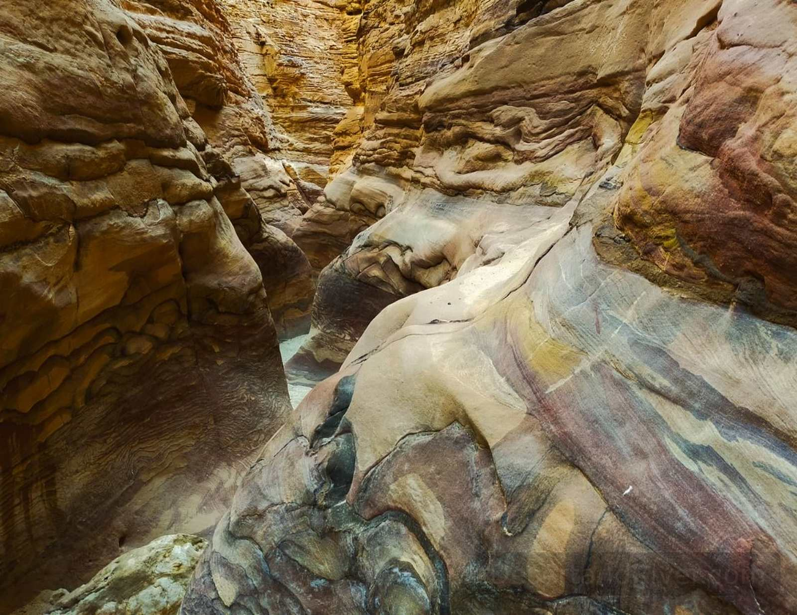
Coloured Canyon
Located in Egypt’s Sinai Peninsula near Nuweiba, Coloured Canyon is a narrow sandstone gorge shaped by ancient water erosion and distinguished by layered mineral deposits in varied hues.
Formed over millions of years, the canyon’s striated walls display bands of iron, manganese, and sandstone in muted reds, purples, and ochres. Its winding passages narrow and widen unpredictably, creating alternating moments of compression and release that heighten awareness of scale and geological time within an otherwise arid landscape.
A typical guided walk through the canyon takes 2 hours and involves uneven terrain with occasional light scrambling.
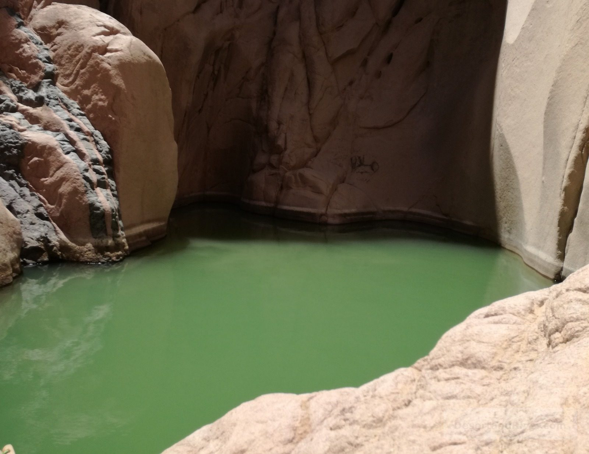
Wadi Weshwashy
Wadi Weshwashy is a narrow desert canyon in Egypt’s Sinai Peninsula, near Nuweiba, known for its concealed freshwater pools set within sculpted sandstone rock formations.
Formed over millennia by seasonal flash floods cutting through sedimentary rock, the wadi culminates in a series of natural basins filled by rainwater and underground seepage. Reached by a gradual walk across open desert, the transition from exposed plain to enclosed canyon creates a marked shift in scale and sound, where stillness and echo replace the vast silence of the surrounding landscape.
Access requires a 45–60 minute guided desert walk from the nearest track. Accessible by 4x4 vehicle or camel
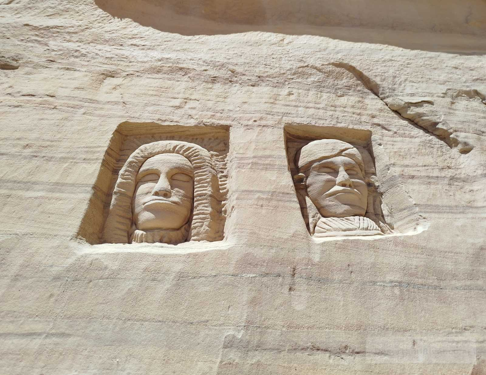
Hidden canyons
A narrow sandstone canyon near Taba in eastern Egypt, known as the Hidden Canyon, contains preserved Ottoman-era inscriptions carved into its rock walls.
Located in the mountains west of Taba on the Sinai Peninsula, the canyon is formed of layered sandstone shaped by wind and seasonal water flow. Among its natural striations are Arabic inscriptions dating to the Ottoman period, likely marking administrative presence or passing travellers. The confined passage, filtered light, and weathered script create a quiet encounter with geological and historical time.
Approximately 30–45 minutes on foot; best visited in the early morning for cooler temperatures and softer light.
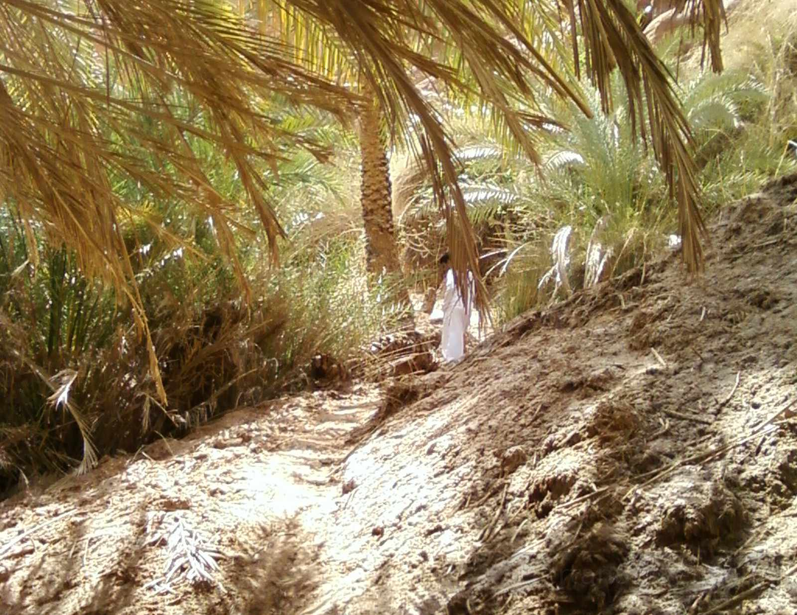
Wadi El Malha
Wadi El Malha is a salt-lined desert valley in Egypt’s South Sinai region, situated east of the Sinai highlands and characterised by mineral deposits, rock formations, and seasonal water channels.
The wadi’s name, meaning “Valley of Salt,” reflects the pale mineral crusts formed by evaporation in this arid landscape shaped by tectonic uplift and erosion. Its wide, open basin and muted tones create a pronounced sense of scale, where stillness and exposure heighten awareness of geological time and the body’s smallness within it.
Accessible by 4x4 vehicle or camel with short exploratory walks across uneven terrain.
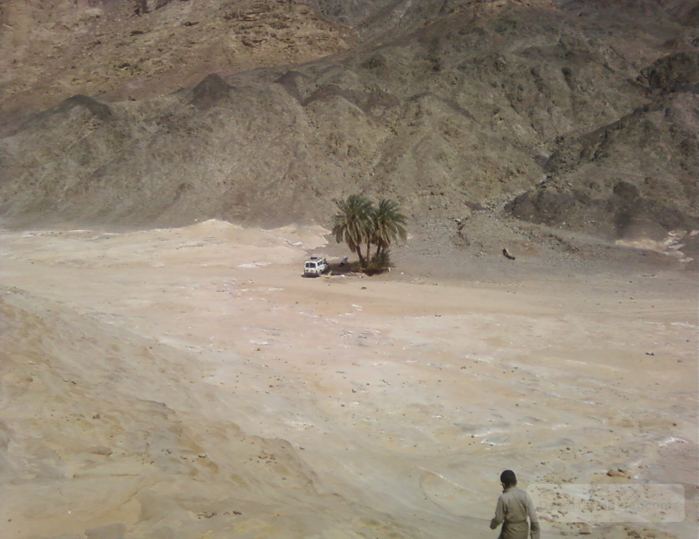
Bir El Berea
Bir el Berea is a remote desert well and encampment site in Egypt’s Sinai Peninsula, situated within a landscape of sandstone plateaus and gravel plains shaped by wind and time.
Located in central Sinai, Bir el Berea historically served as a modest water source for Bedouin communities and travellers crossing the peninsula’s interior routes. The surrounding terrain—arid, expansive, and sparsely inhabited—offers an acute awareness of distance and silence, where geological time feels more present than human movement.
Best visited between October and April, when daytime temperatures are moderate and access routes are more manageable.
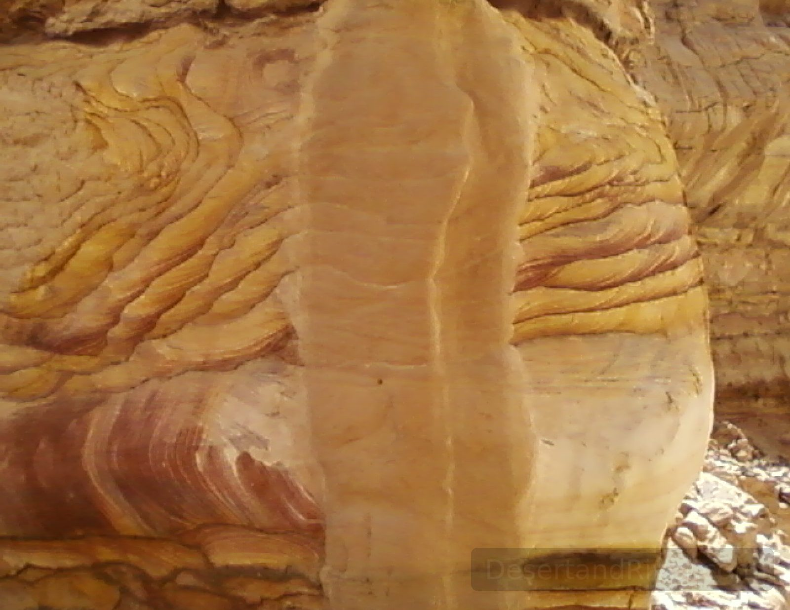
Rainbow Canyon
Rainbow Canyon is a sandstone gorge in Egypt’s Sinai Peninsula, distinguished by naturally banded rock formations shaped by tectonic uplift and long-term erosion.
Located within the arid interior of South Sinai, the canyon’s layered walls display mineral staining in muted reds, ochres, and purples, revealing geological processes that unfolded over millions of years. Its confined passages and filtered light create a subdued atmosphere in which sound carries softly, encouraging an awareness of scale and of time embedded in stone.
Typical walking route: approximately 1–2 hours over uneven, rocky terrain.
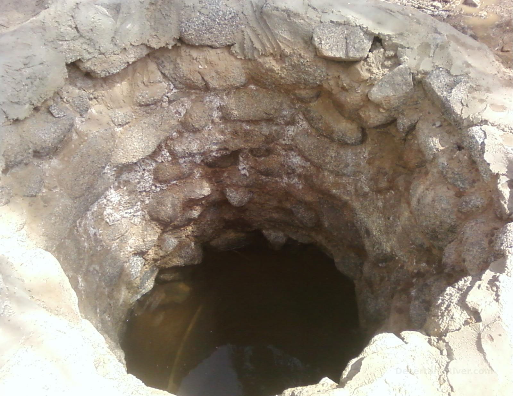
Bir El Sorah
Bir el Sorah is a remote desert well located within Wadi Watir in South Sinai, Egypt, historically serving as a water source along inland Bedouin travel routes.
Situated in the broad gravel plains of Wadi Watir, Bir el Sorah forms part of a network of wells that once supported pastoral movement and small-scale settlement in an otherwise arid landscape. Its presence marks a quiet interruption in the vast mineral terrain, where the surrounding silence and openness invite reflection on endurance, scarcity, and the measured rhythm of desert life.
Accessible by 4x4 vehicle; located approximately 60 km northwest of Nuweiba in South Sinai.
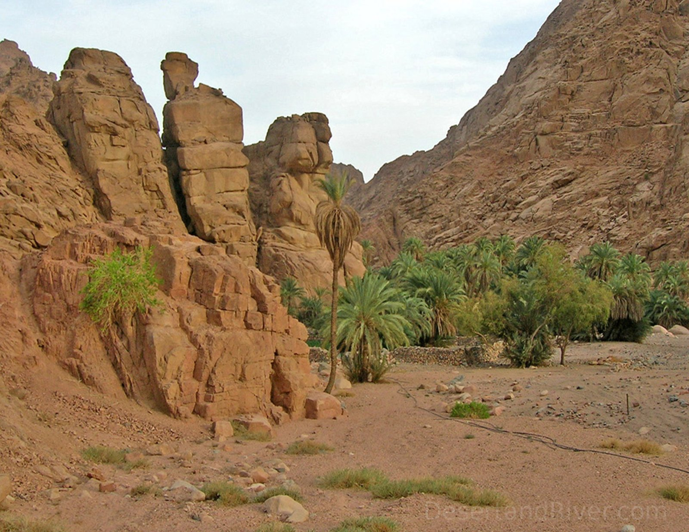
Ain Fortaga
Ain Fortaga is a natural spring in the southern Sinai Peninsula, providing a rare source of freshwater amid the arid desert landscape of Egypt’s mountainous region.
The spring emerges from rugged sandstone cliffs, historically sustaining local Bedouin communities and wildlife. Its quiet flow contrasts sharply with the surrounding desert’s harshness, offering a moment of contemplative stillness and connection to the enduring rhythms of this landscape.
Accessible via a 30-minute walk from the nearest desert track for short exploratory walks
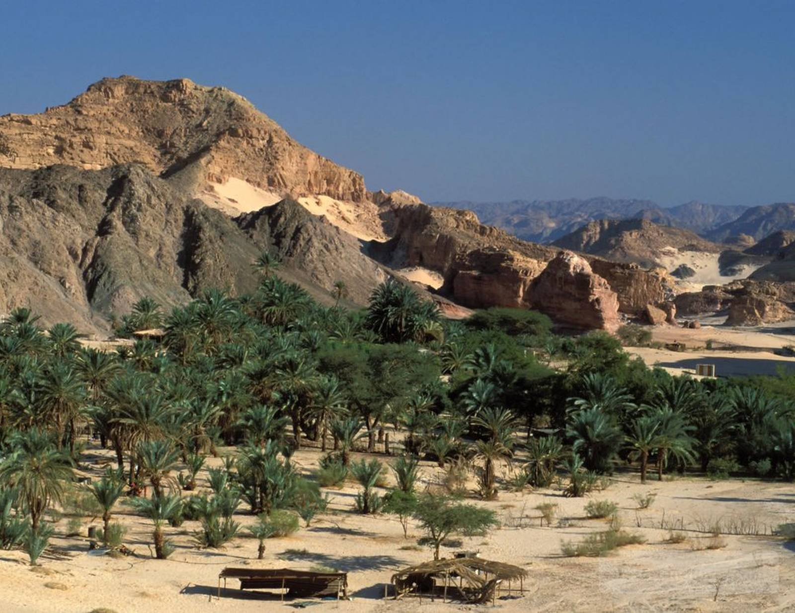
Ain Um Ahmed
Ain Um Ahmed is a natural spring in the southern Sinai Peninsula, offering a rare freshwater source amid the region’s arid desert landscape.
The spring has historically supported nomadic Bedouin communities and local wildlife, forming a small, fertile enclave in an otherwise rugged terrain. Its still waters mirror the vast, silent expanse around it, evoking a sense of timeless isolation and subtle continuity in the desert environment.
Accessible by 4x4 vehicle from the nearest desert track.
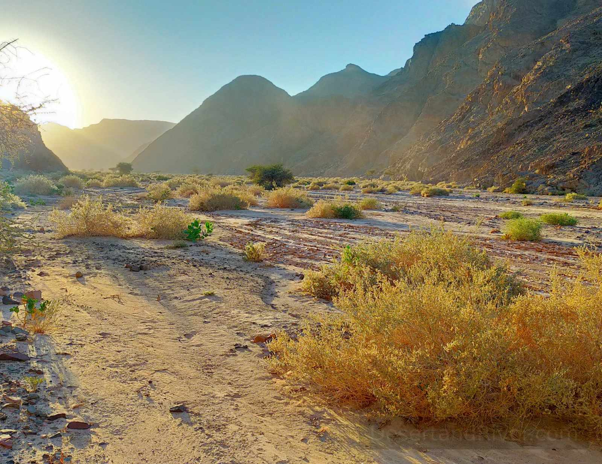
Wadi Gazhalla
Wadi Gazhalla is a desert valley in the Sinai Peninsula, known for its rocky terrain and seasonal watercourses, and historically named for the site where a local man found a dead gazelle and rescued its young.
The name “Gazhalla” reflects this anecdote, meaning “the place of the gazelle,” preserving a quiet human connection to the landscape. The valley’s rugged rock formations and undisturbed sands evoke a sense of stillness and timelessness, where one can sense the slow shaping of both nature and memory over generations.
The wadi is typically traversed by vehicle rather than on foot, offering a scenic drive through its narrow desert passages.
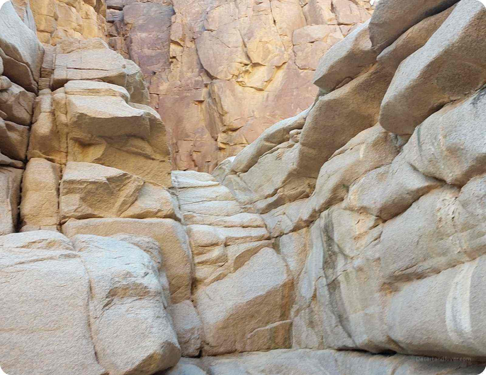
Wadi El Rum
A remote valley in southern Sinai, Wadi El Rum extends through rugged desert terrain, characterised by rocky cliffs, seasonal watercourses, and sparse vegetation.
The wadi forms part of a network of valleys shaped by millennia of erosion, revealing stratified rock formations and occasional archaeological traces of Bedouin habitation. Its vast openness evokes a profound sense of stillness, where the scale of the landscape invites reflection on time and endurance.
A moderate 1-hour hike accessible via 4x4
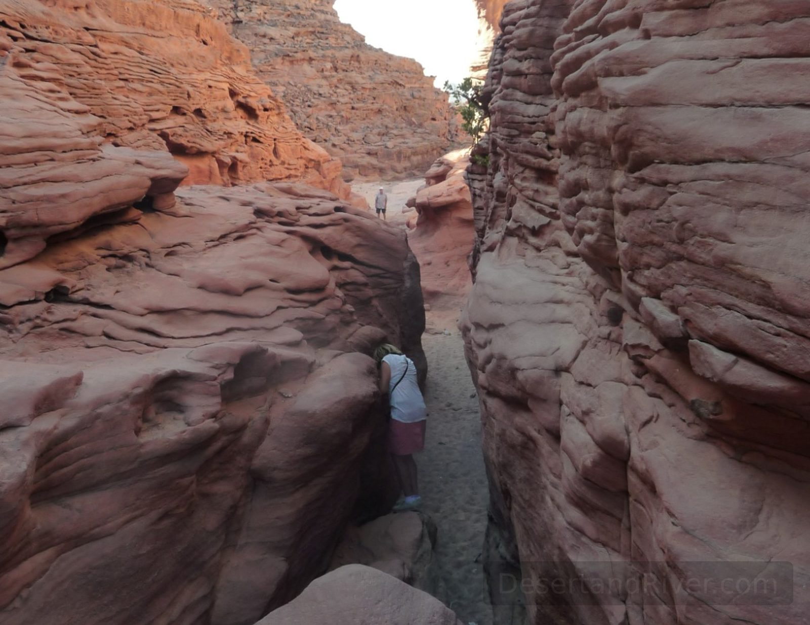
Salama Canyon (Small Coloured Canyon)
A wide, multicoloured sandstone canyon in the southern Sinai Peninsula, Salama Canyon is a compact geological formation shaped by millennia of erosion.
The canyon displays layers of red, ochre, and cream stone, revealing the region’s complex sedimentary history and subtle mineral variations. Walking through its twisting passages, one senses a quiet compression of space and time, where sunlight and shadow accentuate the intimate scale of the natural walls.
Approximately 30 minutes to traverse; best visited in cooler morning or late afternoon hours.
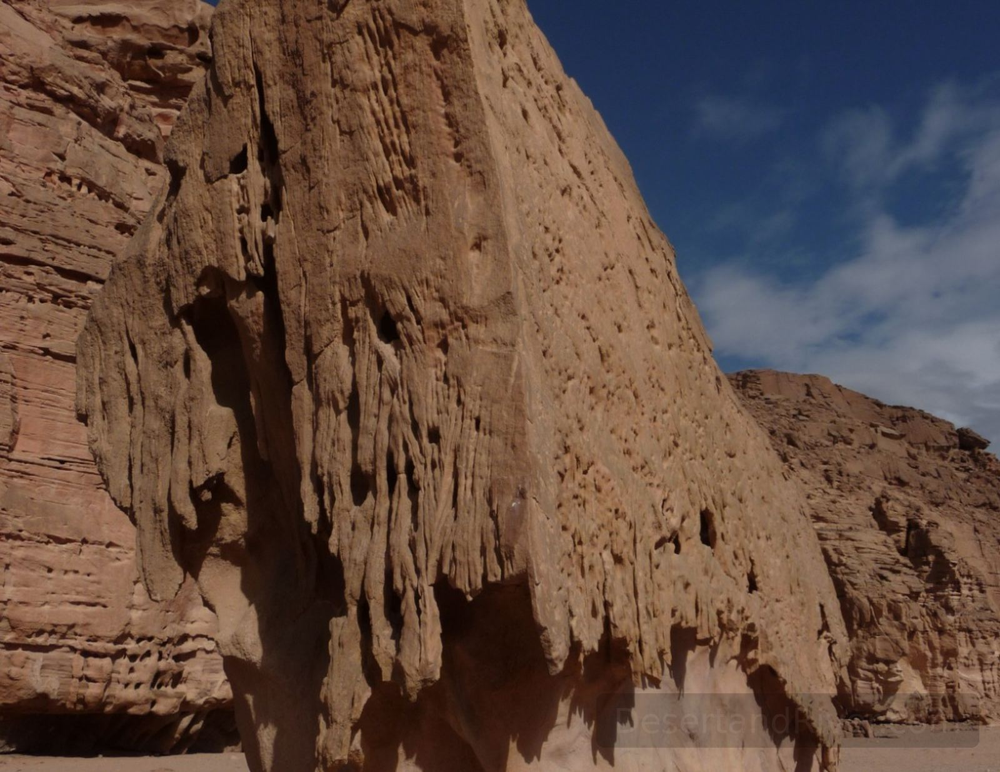
Wadi El Disco
A wide, open valley in southern Sinai, Wadi el Disco is distinguished by a towering wall face and natural acoustics that create striking echoes across the desert floor.
The wadi’s expansive terrain accommodates both passage and temporary overnight stays, offering a sense of vastness unusual in the Sinai. Its sheer cliff and resonant echoes evoke a quiet awareness of scale and the desert’s enduring presence, where sound and space interplay across time.
Suitable for vehicular access; overnight camping is possible under clear desert skies.
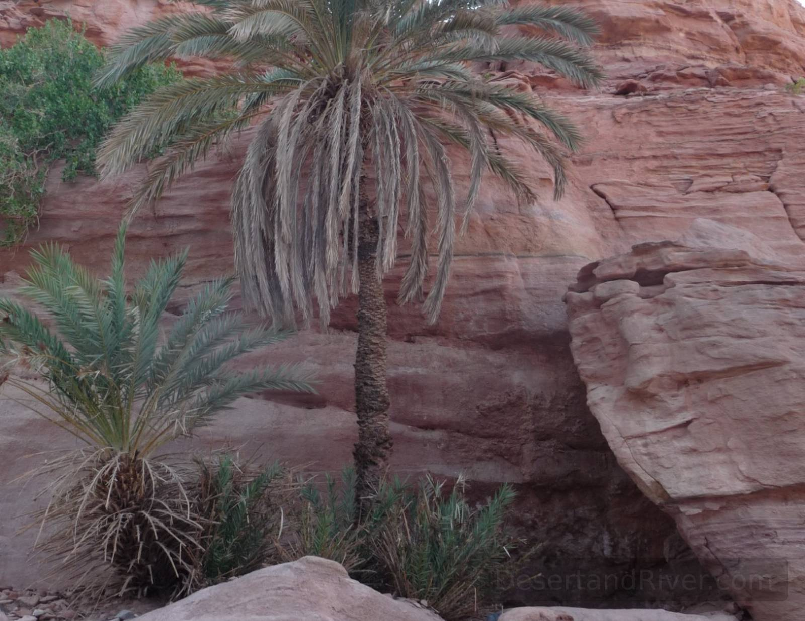
Melahith Oasis
This remote site in Sinai, Egypt, combines a wadi, a canyon, an oasis with four small animal ponds, and the Melahith Mountain, forming a complex natural landscape shaped by water and wind over millennia.
The area exhibits striking geological contrasts, with wide canyon walls opening onto an oasis, which has rock formationwhere four small ponds provide water for local wildlife and fauna such as palm trees, acacia trees & caper bushes, before rising into rugged mountain terrain.
Elevation ranges from 450 to 850 metres; moderate trek recommended.
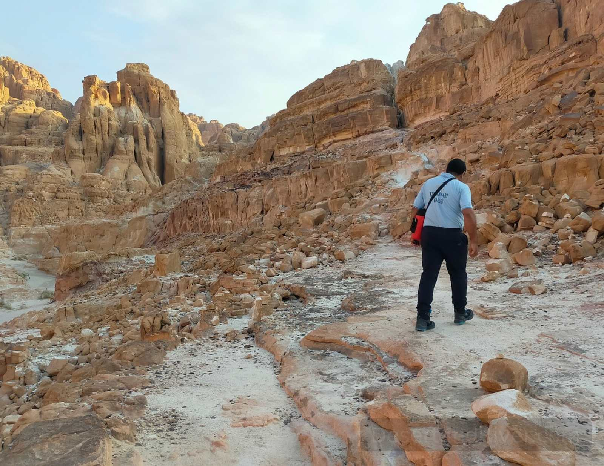
Nagb El Hemedat
Nagb el Hemedat is a narrow mountain pass in the Sinai Peninsula, at approximately 650 m elevation, linking Wadi Gazallah to the Closed Canyon and featuring Crusader-era inscriptions.
The trail climbs through rugged sandstone ridges, offering sweeping views of the surrounding valleys and distant mountains. Crusader inscriptions etched into the rock provide a tangible connection to medieval travelers, while the quiet expanse and elevated vantage evoke a reflective sense of scale and solitude.
Approx. 1-hour walk; moderate terrain; elevation ~650 m.
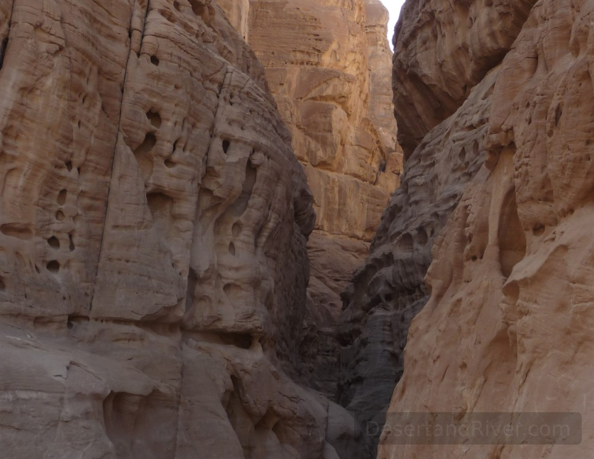
Closed Canyon
A narrow, winding canyon located near Ain Khudra Oasis in the Sinai Peninsula, characterized by its constricted passages requiring careful passage on foot.
The canyon’s walls rise sharply, creating a striking contrast between sunlight and shadow as visitors traverse its tight confines. Its extreme narrowness, which demands side-on walking, fosters a rare sense of intimacy with the surrounding rock and a contemplative awareness of spatial scale.
Walking time: approximately 30 minutes each way; very narrow passages.
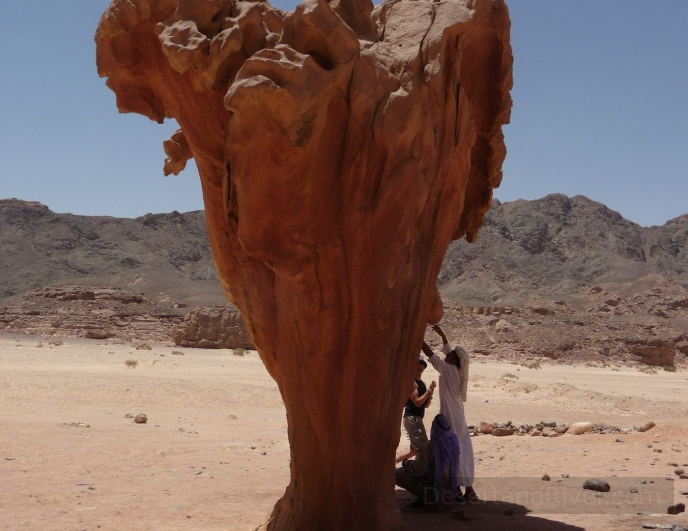
Mushroom Stone
Mushroom Stone is a naturally eroded sandstone rock formation in the desert of South Sinai, Egypt, shaped by wind abrasion into a narrow stem supporting a broad, cap-like crown.
Located along desert tracks between wadi Gazallah and Ain Khudra, the formation is a product of long-term aeolian erosion acting on layered sandstone. Its distinctive proportions illustrate the gradual force of wind against softer rock, creating a structure that appears improbably balanced and invites reflection on geological time and the quiet persistence of natural processes.
Accessible by 4x4 vehicle with a short walk across flat desert terrain.
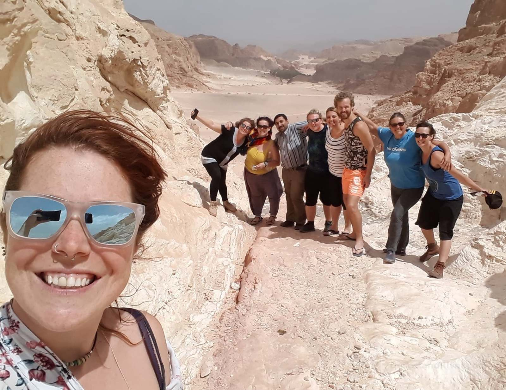
Nagb Khudra
A remote wadi in southern Sinai, Nagb Khudra stretches along the Nuweibaa–St. Katherine road, connecting to Ain Khudra and tracing a historically significant passage.
The route passes the Rock of Inscriptions, which bears ancient Nabatean, Arabic, and Greek markings, evidencing long-standing cultural exchange across the peninsula. The landscape’s stark, sun-bleached stone and quiet expanses evoke a profound sense of temporal depth, as if walking through layers of human and geological history.
Accessible by hiking or camel via the Nuweibaa–St. Katherine road; moderate walking conditions along the wadi. Approx. 1 hour hike.
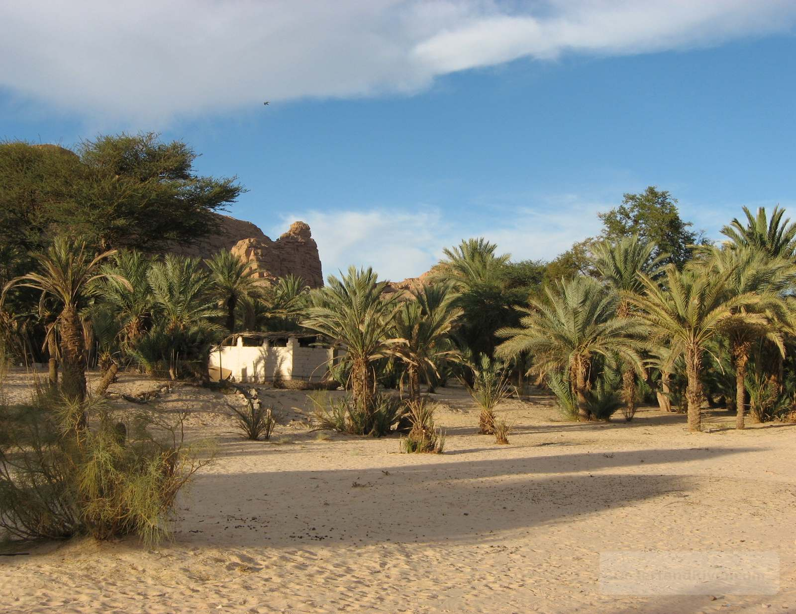
Ain Khudra Oasis
Ain Khudra is a small desert oasis in southern Sinai, Egypt, where perennial springs support pockets of vegetation amidst an otherwise arid and rugged landscape.
The oasis has historically provided water and shelter for Bedouin communities and travelers crossing the Sinai Peninsula, offering a rare contrast to the surrounding barren terrain. Its gently rustling palms and the quiet shimmer of spring-fed pools evoke a sense of stillness and temporal pause, emphasizing the desert’s vast scale and subtle beauty.
Accessible via off-road tracks
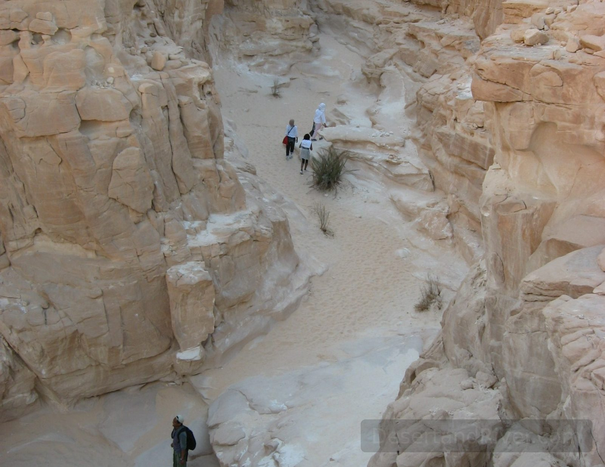
White Canyon
White Canyon is a wide sandstone gorge in the Sinai Peninsula, Egypt, situated between St. Katharine–Nuweibaa Road and the Ain Khudra Oasis.
Formed over millennia by erosion, the canyon’s pale sandstone walls display subtle layers and textures that reflect the region’s geological history. Walking through its open expanse, one senses a quiet vastness and enduring stillness, where the scale of the landscape invites reflection and a slow attunement to time.
Accessible from nearby roads, moderate walk of 1 hour, elevation is 950m
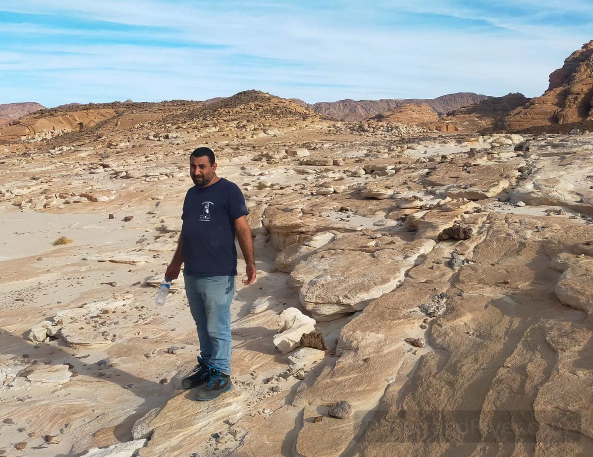
Magazah Valley & Canyon
A narrow canyon within Wadi Gazallah in southern Sinai, featuring sheltered areas and natural fig trees traditionally called Hamata by local Bedouin, connected at both ends.
The canyon forms a continuous route from Nuweibaa–St. Katherine road to Magazah Valley, taking approximately one hour to traverse on foot. Quiet and warm, it offers hidden gaps and natural shelters, while fig trees along the path create a contemplative atmosphere that accentuates the scale and stillness of the surrounding desert landscape.
Hike takes around one hour; suitable for overnight camping in sheltered areas.
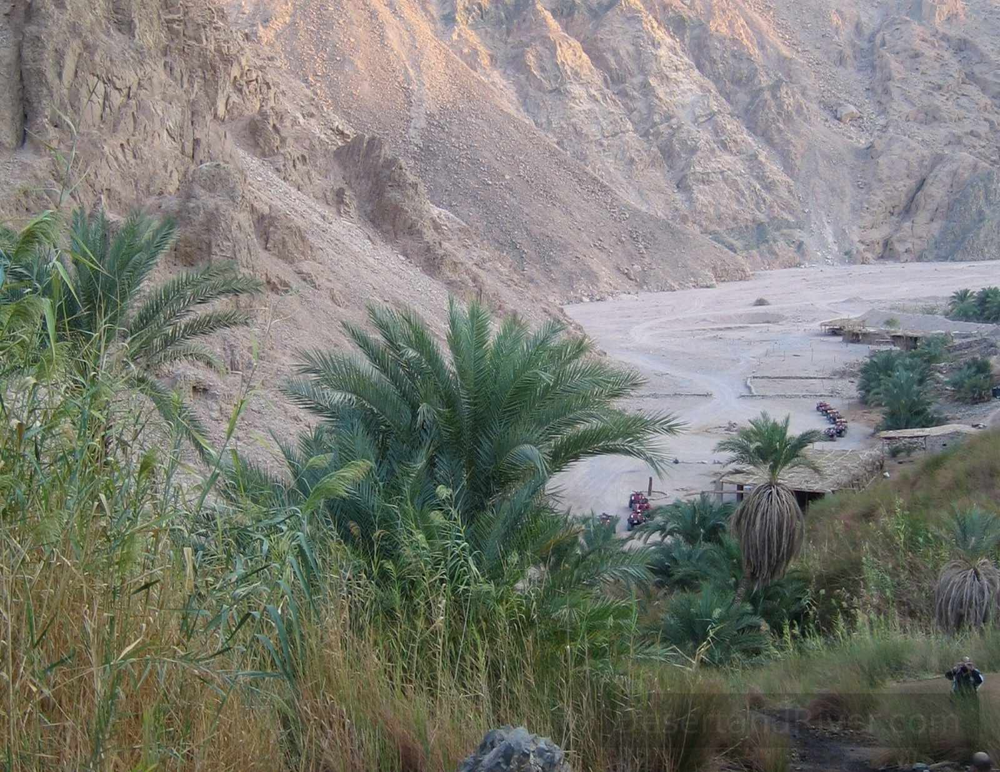
Wadi Gunai
Wadi Gunai is a desert valley in South Sinai, located inland from Dahab, characterised by sandstone formations, acacia groves, and small Bedouin settlements.
Situated between the coastal plain of Dahab and the granite highlands of the interior, the valley forms part of a broader network of wadis shaped by seasonal rainfall and erosion. Traditionally inhabited and cultivated in parts by local Bedouin families, it offers a landscape of measured scale and quiet continuity, where cultivated plots contrast gently with the surrounding arid expanse. This is close to Dahab and gives you a taste of the desert - very good for an overnight Bedouin dinner
Accessible by unpaved road from Dahab; suitable for short walks and light hiking
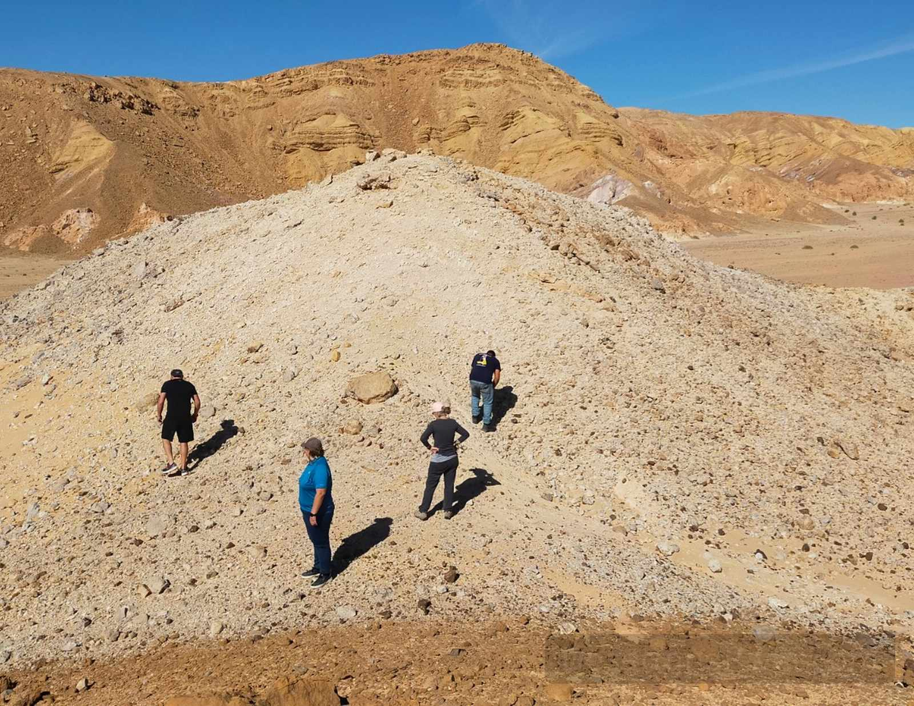
Wadi Jebi
Wadi Jebi is a cultivated desert valley in South Sinai, Egypt, where small farms, ancient inscriptions, and archaeological traces coexist within a broad sandstone landscape shaped by seasonal water flow.
A small number of family farms line sections of the wadi, growing vegetables, fruit, mango, and olive trees sustained by groundwater and traditional irrigation practices. Near the centre of the valley, inscriptions dating back approximately 2,000 years are carved into rock faces, and a neighbouring hill contains scattered stone tools and visible fossils, quietly situating present cultivation within a much longer continuum of human and geological time.
Accessible by 4x4 vehicle; allow 1–2 hours for walking between farms, inscriptions, and the archaeological hill.
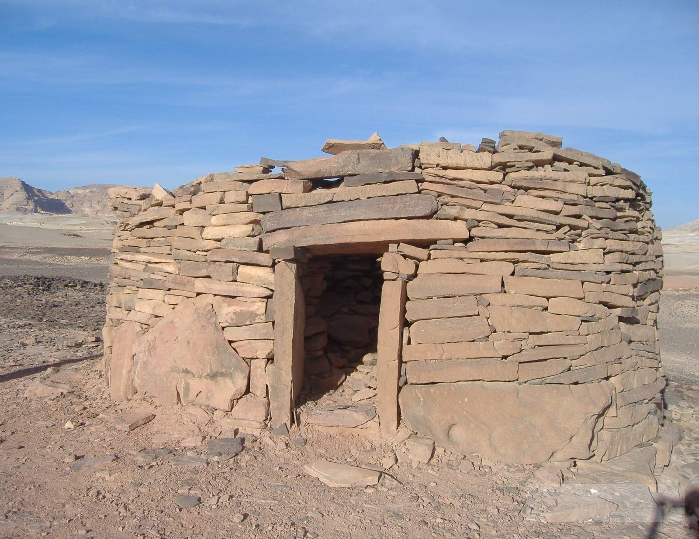
Nawamis
The Nawamis are circular prehistoric stone structures located in the high desert of South Sinai, Egypt, dating to the early Bronze Age and associated with early pastoral communities.
Scattered across remote plateaus between the interior mountains and the Gulf of Aqaba, these low, dry-stone chambers are among the oldest roofed buildings in Egypt, constructed around the 4th millennium BCE. Their small doorways typically face west, suggesting ritual or funerary significance; standing among them, one becomes acutely aware of the vast stillness and the depth of human time embedded in the desert landscape.
Best accessed by 4WD vehicle; sites are typically reached via rough desert tracks from central South Sinai.
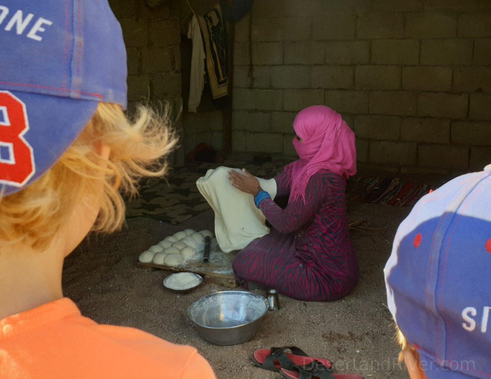
Nawamis Village
Nawamis Village, located in the Sinai Peninsula, Egypt, is a small settlement near ancient circular stone tombs, known for its camel training and traditional Bedouin lifestyle.
The village combines living spaces with goats, chickens, pigeons, and ducks, reflecting a close interdependence between people, animals, and children in an open, unfenced environment. This daily rhythm unfolds alongside the silent, stacked stone tombs of the Early Bronze Age, creating a quiet sense of continuity between past and present. The presence of camels trained for racing adds a subtle, dynamic contrast to the stillness of the surrounding desert plain.
walking among the village and tombs is easy on flat desert terrain.
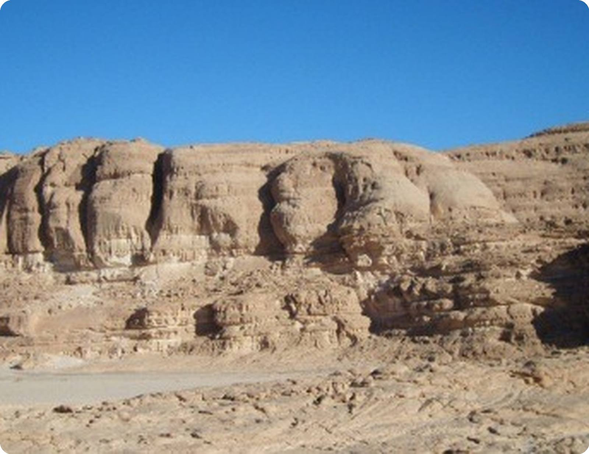
Gebl El Matamir
Gebl El Matamir is a wind-sculpted mountainous formation in central Sinai, where sand-covered boulders rise from the desert plateau, their hidden contours reflecting the meaning of “Matamir.”
The massif’s large stones are partially buried under sand, shaped over time by persistent desert winds, creating a landscape of concealed forms and subtle textures. This quiet interplay of stone and sand evokes a sense of hiddenness and stillness, offering a reflective encounter with the desert’s slow, enduring transformations.
Approximate hiking time across the main ridge: 2–3 hours.
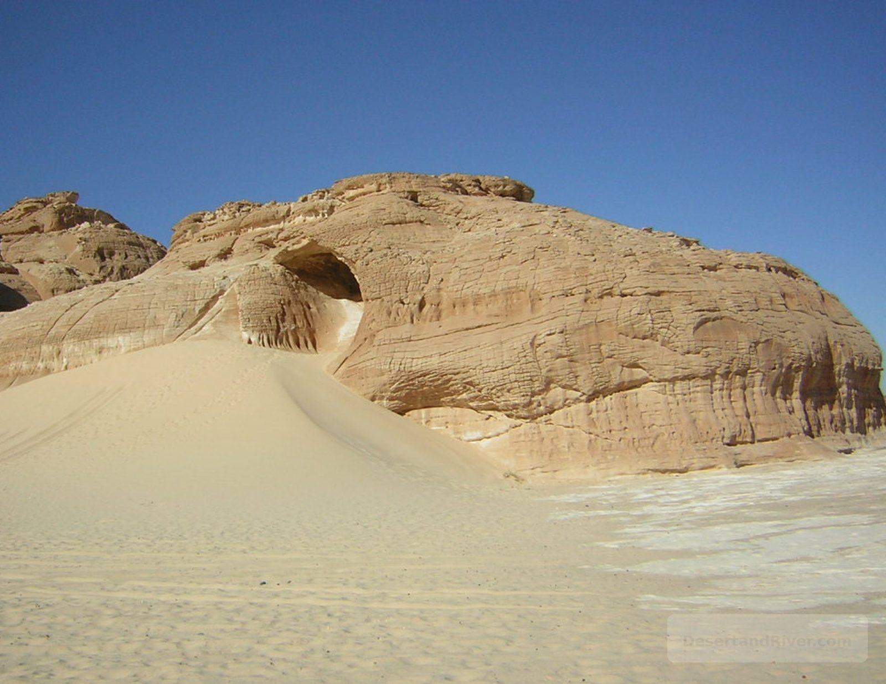
Gebl Makhroom (Dragon Head Mountain)
Gebl Makhroom, or Dragon Head Mountain, is a sandstone peak in southern Sinai, shaped by wind and sand to resemble a dinosaur’s head with a hollow “eye” cavity.
The mountain’s windswept erosion carved a distinctive hole, reminiscent of a dinosaur eye, while the surrounding ridges suggest teeth and jawlines. This natural sculpting accentuates the rugged scale of the landscape, offering a contemplative sense of time’s patient shaping forces across the Sinai desert.
Elevation approximately 820 meters; moderate hike
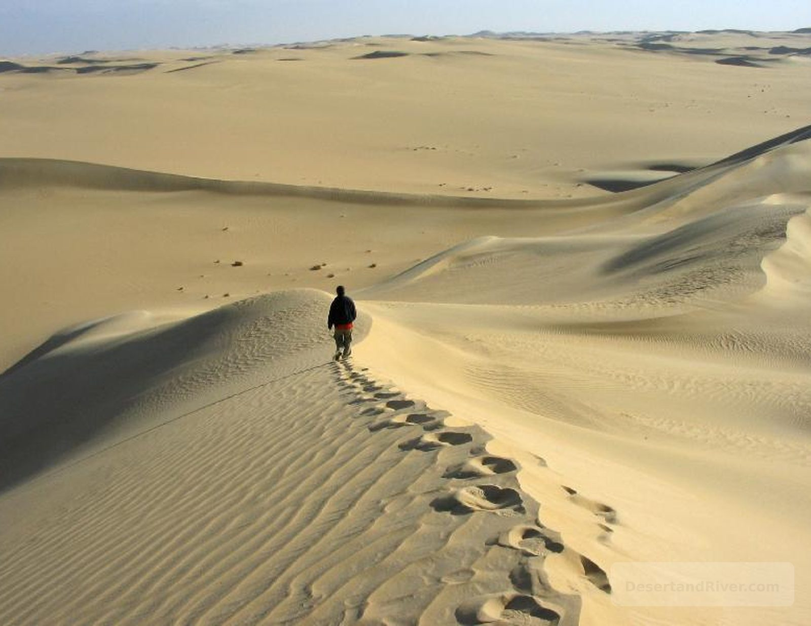
Hedoda Sand Dune
Hedoda Sand Dune is an expansive desert formation in southern Sinai, characterized by gently undulating sands shaped by wind and seasonal climatic patterns.
The dune lies within the arid landscapes connecting the Sinai mountains to lower desert plains, offering a quiet, almost meditative sense of openness. Its smooth, shifting contours reflect the slow passage of time, where footprints quickly disappear and the horizon stretches uninterrupted.
Walking across the dune is a short walk and is a great spot for sand boarding.
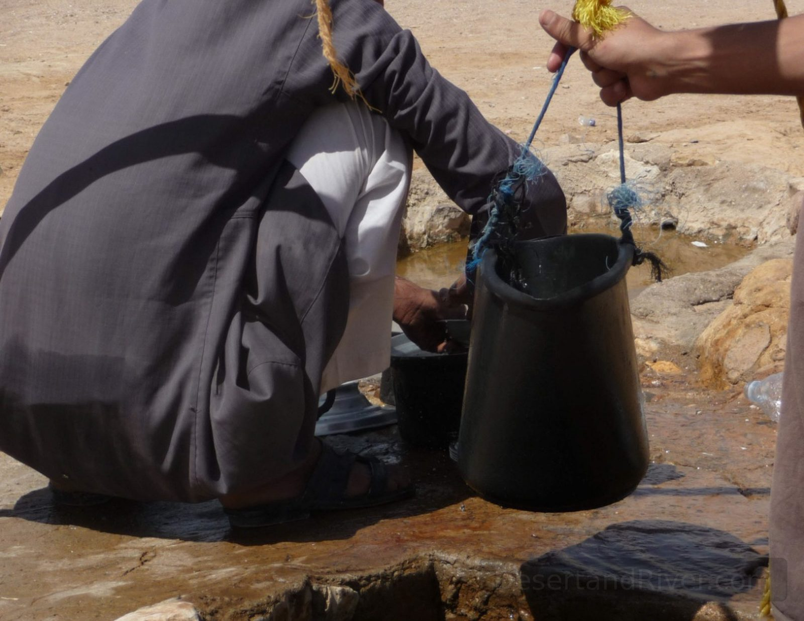
Bir Safra
Bir Safr is a desert well in southern Sinai, Egypt, constructed in 1986 to provide drinking water for animals of a now-abandoned Bedouin settlement.
Situated amid expansive sandstone plains, the well supplied reliable water for both livestock and local inhabitants, though the settlement no longer exists. Its clear water mirrors the vast desert sky, evoking a quiet sense of endurance and the subtle traces of human presence in an otherwise timeless landscape.
Accessible by 4x4 vehicle
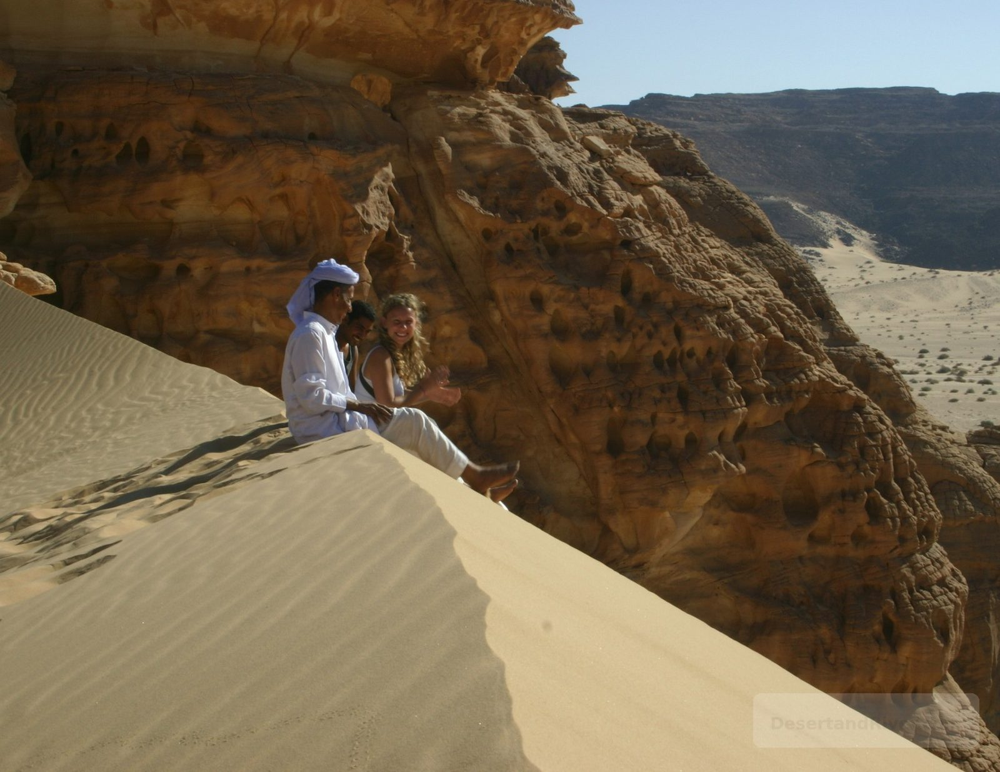
Safra Sand Dune
Safr Sand Dune is a prominent desert formation in southern Sinai, named for its distinctive yellow sand—“Safr” meaning yellow in Arabic—set against the arid mountain backdrop.
The dune forms part of the Sinai’s extensive desert landscape, shaped over millennia by wind and seasonal temperature shifts. Its smooth, golden slopes, ideal for sandboarding, convey a quiet sense of temporal stillness, inviting reflection on the vast, shifting horizon.
Walking to the summit takes approximately 15 minutes, can be challenging as you get closer to the top with the soft deep sand
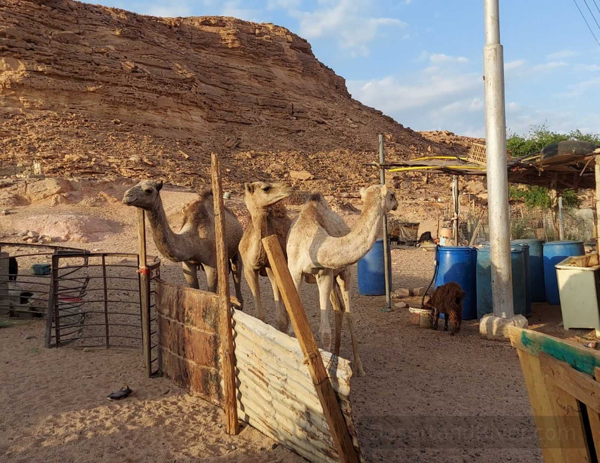
Arada Village
Arada Village is a small roadside settlement in southern Sinai, situated between Nuweiba and St. Katherine Road, where traditional Bedouin life continues alongside artisanal crafts.
The village comprises modest dwellings where residents engage in weaving, spinning, and other handcrafts, preserving cultural practices across generations. Time here moves slowly, marked by the rhythm of daily work and the stark desert landscape, offering a quiet sense of continuity and presence.
Accessible by road; walking through the village takes approximately 20–30 minutes.
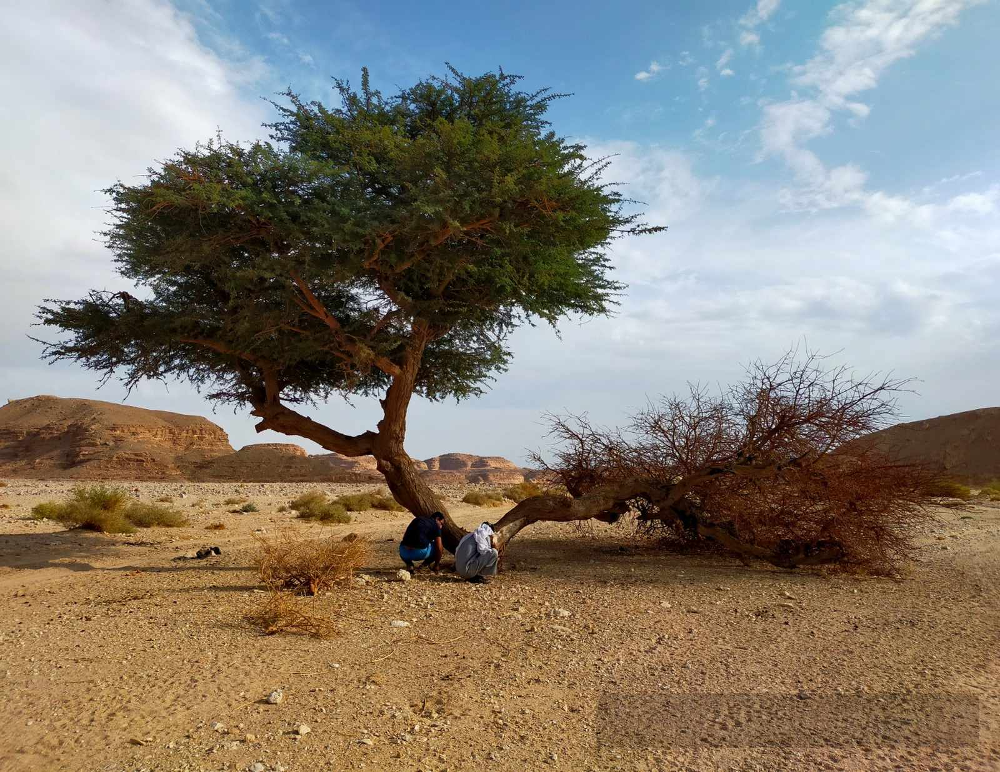
Wadi Arada
Wadi Arada is a remote desert valley in southern Sinai, Egypt, notable for its rugged sandstone formations and ancient rock inscriptions along its slopes.
The valley features numerous petroglyphs depicting aspects of daily life, reminiscent of scenes found in Sinai’s temples, including a striking carving of a wild cat—likely a leopard or lion—thought to date back 8,000 years when the region resembled a savanna. Sunlight across the inscriptions highlights their enduring presence, inviting reflection on the lives of those who once traversed this quiet landscape. Full of Colourful rocks and inscriptions
Accessible via a 1 hour hike from the St. Catherine–Nuweibaa road. Easy walking.
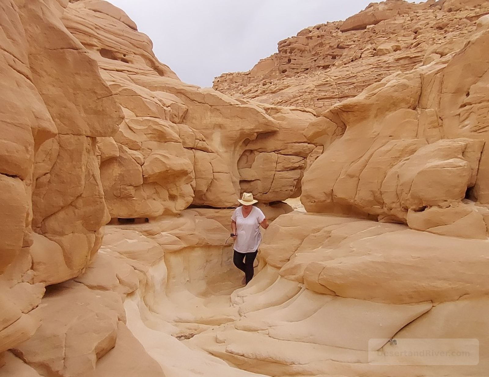
Arada Canyon (Double Canyon)
Arada Canyon, or the Double Canyon, is a sandstone formation in southern Sinai, featuring two connected gorges shaped by erosion, with a plateau displaying ancient marine fossils.
The canyon earns its name from the dual paths: climbers ascend one gorge and descend the other at the tip, tracing the contours of stone reminiscent of the American Antelope Canyon. Along the plateau, fossilised corals and marine life evoke the region’s prehistoric seabed, while the narrow passage imparts a quiet sense of scale and temporal depth.
The full traverse of the double canyon, including climbing and descent, takes approximately 1–1.5 hours.
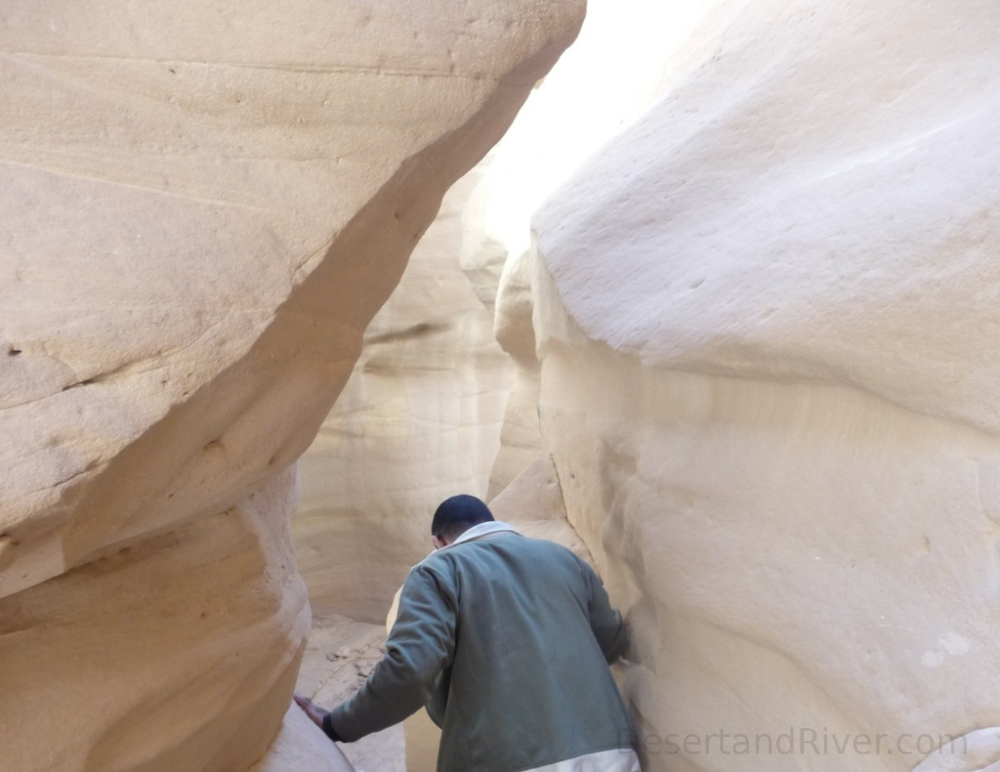
Pigeon Canyon
Pigeon Canyon is a wide, low-lying sandstone valley in southern Sinai, Egypt, where wild pigeons inhabit natural rock shelters along its floor and slopes.
The canyon stretches gently across arid terrain, offering a habitat for pigeons that naturally reside among its formations rather than being reared by humans. Sunlight moves slowly over the broad, shallow walls, highlighting textures and patterns that create a subtle sense of calm and quiet observation.
Approximately a 1-hour hike; easy difficulty.

Zig Zag Canyon
A sandstone gorge in the southern Sinai Peninsula, Zig Zag Canyon, named for its sharply angled turns, lies near the St. Katherine–Nuweibaa road and forms a compact geological corridor.
The canyon’s distinctive zig-zagging path reflects millennia of erosional shaping, creating intimate spaces within its layered sandstone walls. It is very pleasant to spend a night here surrounded by the soft glow of candles, offering a quiet, reflective sense of enclosure and stillness.
Hike takes approximately 30 minutes there and back; moderate difficulty
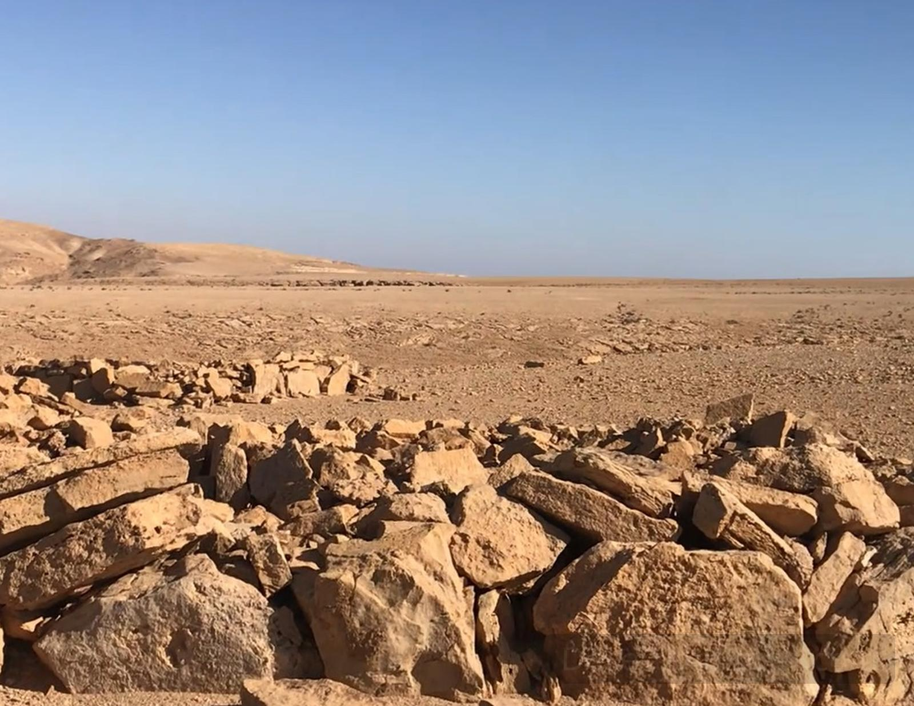
Gebl Gunna
Gebl Gunna is a sandstone mountain in central Sinai, notable for its geodes, stone chimneys, and geothermal vents at its summit.
The summit hosts geothermal vents, normally found under the sea, hinting at the mountain’s ancient marine origins. Stone chimneys mark these vents, and scattered geodes catch the desert light, creating a quiet, contemplative sense of time and the land’s slow geological transformation.
Approximately 1-hour hike from the St. Katherine–Nuweibaa road, moderate difficulty.
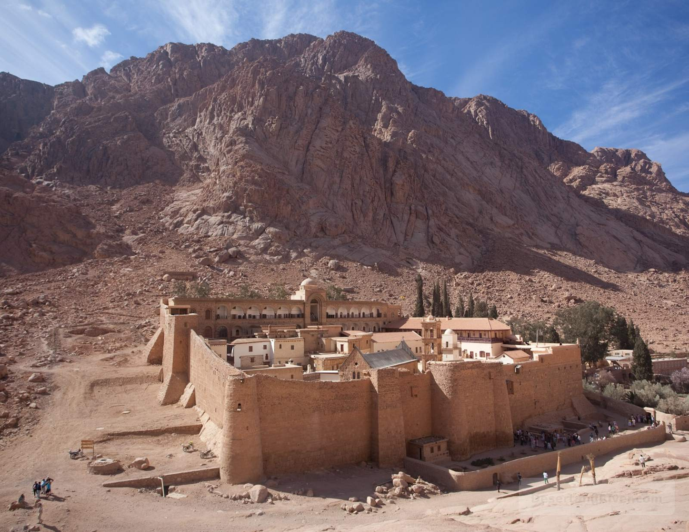
St. Katherine Monastery
St. Katherine Monastery, situated at the foot of Mount Sinai in southern Egypt, is the oldest working Christian monastery in the world, with continuous monastic life since the 6th century.
Founded under Byzantine patronage, the monastery houses ancient manuscripts, icons, and relics, reflecting centuries of uninterrupted religious practice. Encircled by rugged mountains, its quiet courtyards and austere stone structures evoke a contemplative stillness, contrasting the harsh desert landscape beyond.
Located at 1,580 m above sea level; accessible year-round with moderate walking paths.
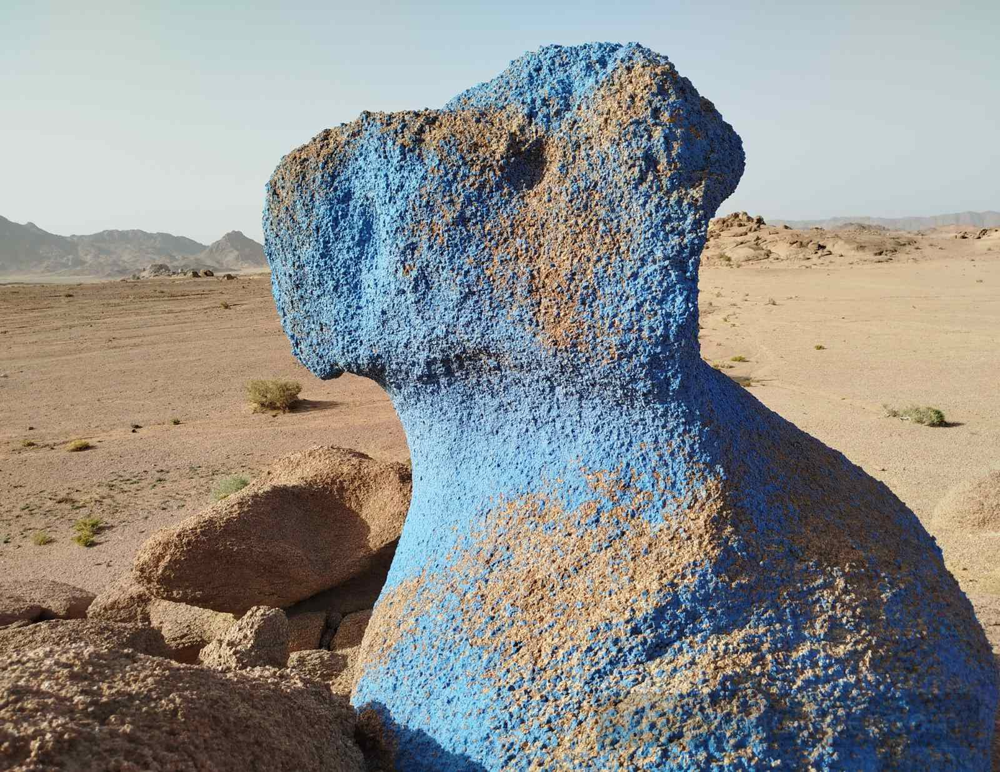
Blue Desert
The Blue Desert is a remote expanse in southern Sinai, Egypt, noted for its pale sandstone hills lightly tinted with bluish mineral deposits and occasional painted rock formations.
In 1979, Belgian artist Jean Verame painted several rock faces here in vibrant blue to symbolically commemorate peace, adding a human layer to the desert’s natural contours. The soft, muted landscape, punctuated by these blue gestures, evokes stillness and reflection, offering a quiet contrast to the surrounding mountains and valleys.
Accessible by 4x4
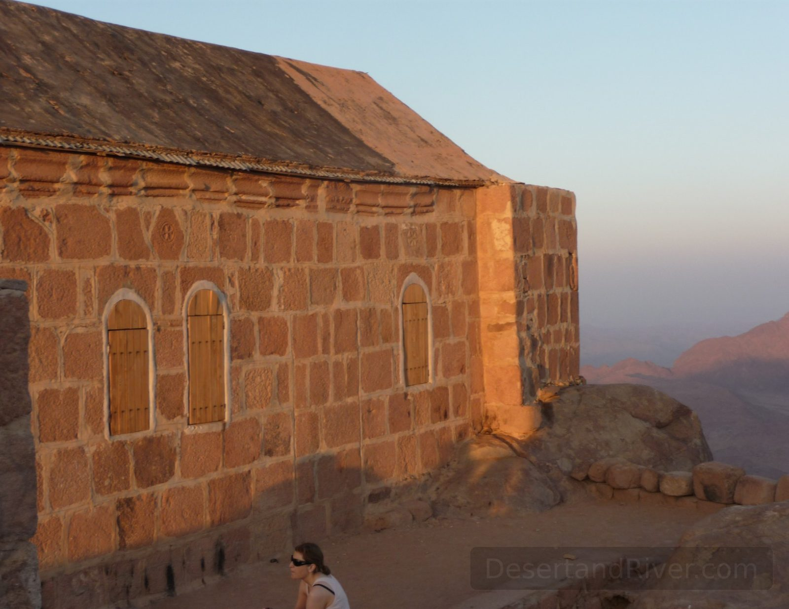
Mount Sinai
Mount Sinai is a prominent granite peak in the southern Sinai Peninsula of Egypt, historically and religiously significant as a site of biblical revelation.
Rising to 2,285 metres, Mount Sinai forms part of the rugged desert landscape that stretches between St. Catherine and the Red Sea. The mountain’s stark slopes and quiet summit evoke a profound sense of solitude and temporal depth, connecting visitors to the immensity of both nature and history.
Elevation: 2,285 metres; ascent typically takes 2–3 hours from the base trails.
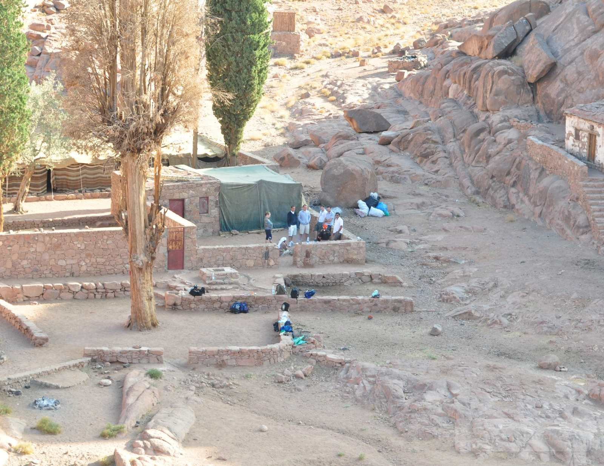
Farsh Eliyah
A remote plateau in central Sinai, Egypt, located roughly halfway between Saint Catherine Monastery and the summit of Mount Sinai, characterized by rugged terrain and sparse vegetation.
Farsh Eliyah presents an elevated, rocky landscape shaped by millennia of erosion, with panoramic views of surrounding valleys and distant mountains. The plateau conveys a quiet sense of isolation, where the stillness of the desert emphasizes the scale and permanence of the terrain, offering a reflective pause between the monastery below and the peak above.
Reachable via a 1.5–2 hour moderate hike from the monastery toward Mount Sinai.
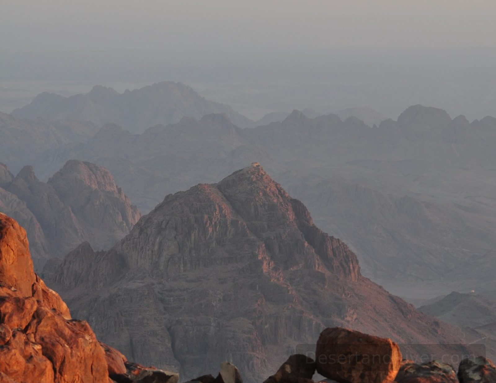
Katherine Mountain
Katherine Mountain is the highest peak in the Sinai Peninsula, located near Saint Catherine, offering a prominent granite and sandstone massif within a rugged desert landscape.
Historically significant for its proximity to Saint Catherine Monastery and its association with religious pilgrimage, the mountain rises sharply above surrounding plains, creating a stark visual contrast. The quiet expanses and sweeping views convey a profound sense of stillness and scale, inviting contemplation of both landscape and time.
Elevation: 2,634 metres; typically a 2–3 hour difficult climb from Saint Catherine.
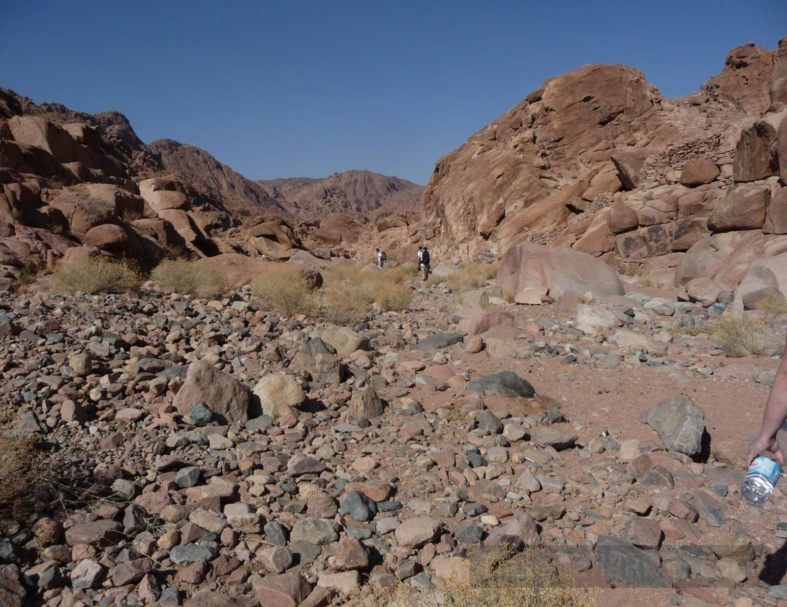
Wadi el Arbaeen
A broad, arid valley in southern Sinai, Wadi el Arbaein connects St. Katherine Mountain to the nearby monastery, channeling seasonal runoff through the surrounding sandstone ridges.
The wadi forms a one-hour walking route linking the mountain and monastery, its floor marked by scattered gravel and sparse desert vegetation. Moving through it, the scale of the enclosing ridges conveys a quiet sense of stillness and the slow passage of geological time, inviting reflection amid the rugged landscape.
One-hour walk; moderate terrain suitable for most hikers.
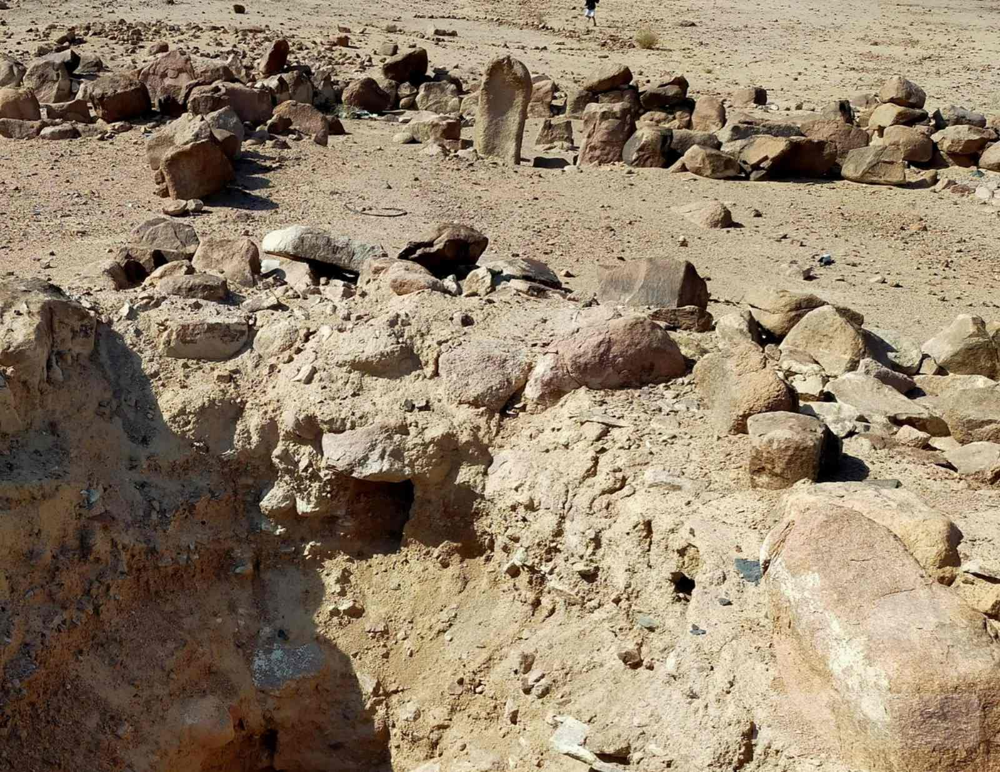
Sheikh Mohsin
Sheikh Morsin is a modest desert outcrop in southern Sinai, Egypt, notable for its Stone Age stone arrangements, sparse vegetation, and proximity to surrounding sandstone plains.
The site contains stones arranged by ancient inhabitants, offering tangible evidence of human activity dating back to the Stone Age. Its quiet expanses of ochre rock and sun-baked earth evoke a sense of timeless stillness, connecting visitors subtly to the depth of history and the desert’s austere scale.
Accessible via unpaved desert tracks
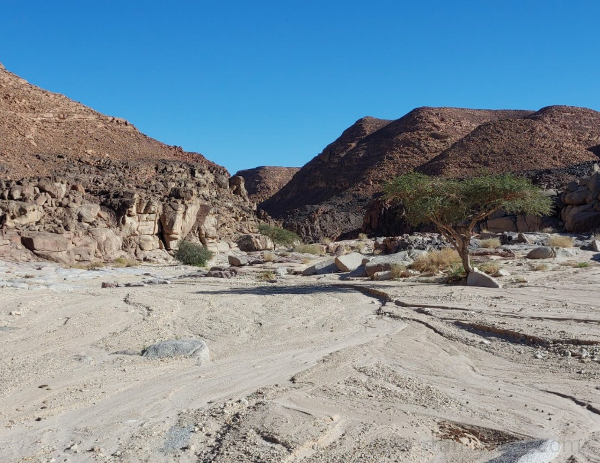
Wadi Zaraniq
Wadi Zaraniq is a dry valley in central Sinai, forming a natural corridor of sandstone and desert terrain that traditionally serves as a Bedouin route connecting settlements.
The wadi stretches across rugged mountains and plains, its broad expanse conveying a quiet, enduring sense of the desert’s scale and history. Travelers often traverse it by vehicle, following a path long used for local movement and trade.
Driving through Wadi Zaraniq takes approximately 2–3 hours.
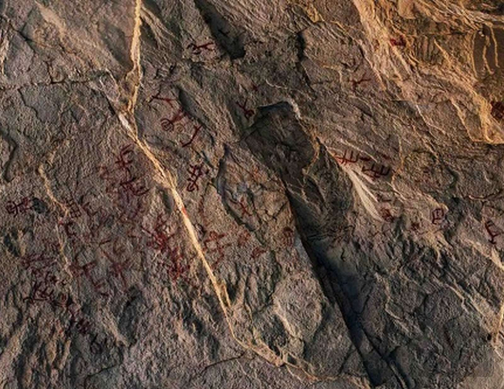
Zaraniq Cave
Zaraniq Cave is a limestone formation in the South Sinai desert near Wadi Zaraniq, notable for its ancient, colorful wall paintings dating back approximately 12,000 years.
The cave’s interior preserves vivid prehistoric art, offering a rare glimpse into early human expression in the region. Entering the cool, shadowed space, visitors experience a striking contrast with the sunlit desert outside, evoking a sense of deep temporal continuity and quiet reflection on millennia of human presence.
Accessible via a short 20-minute hike from the main desert track.
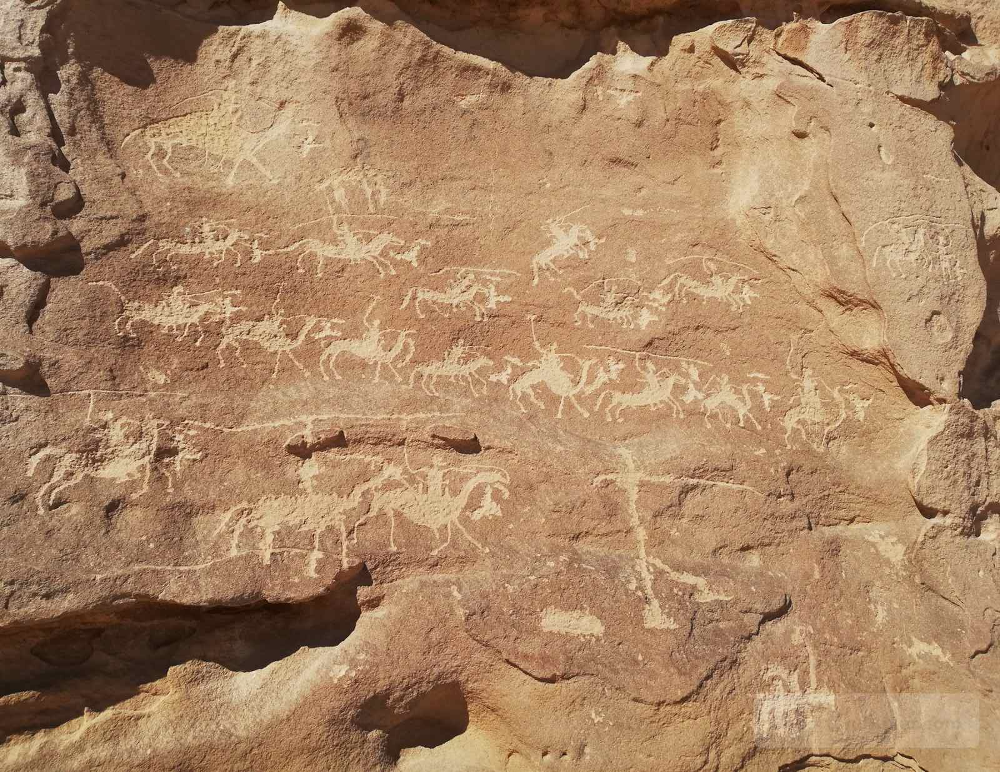
Nabataean War Scene
The Nabataean War Scene is an ancient rock relief in southern Sinai, depicting Nabatean martial imagery carved into the sandstone cliffs along historical trade routes.
The relief likely dates to the early first millennium CE, illustrating armed figures and camels in dynamic formation, reflecting Nabatean military and cultural presence in the region. Its weathered surface and remote setting convey a quiet sense of endurance and the passage of time, inviting contemplation of human endeavor against the vast desert landscape.
Accessible via 4x4 vehicle
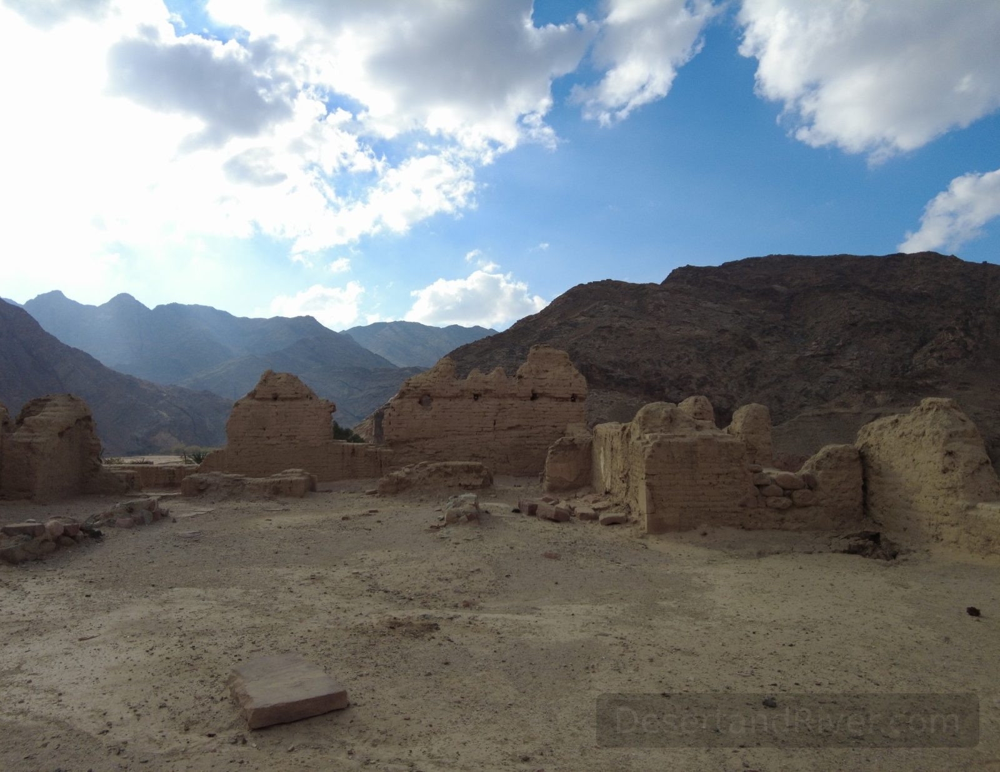
Wadi Feiran
Wadi Feiran is the largest and most fertile wadi in South Sinai, forming a broad desert valley of palm groves and settlements northwest of Saint Catherine.
Long associated with early Christian monasticism and sometimes identified with the biblical Rephidim, the valley preserves traces of Byzantine churches and hermit dwellings amid cultivated gardens. Framed by granite mountains, its unexpected greenery interrupts the surrounding aridity, creating a quiet sense of continuity between ancient habitation and the present rhythm of Bedouin life.
Located approximately 130 km northwest of Sharm El-Sheikh; accessible by paved road year-round.
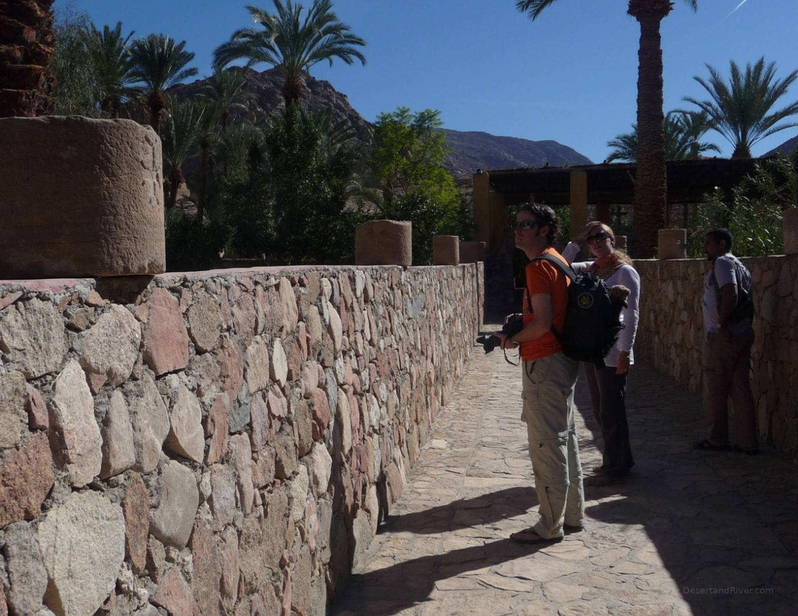
The Seven Nuns Monastery
The Seven Nuns Monastery, located in South Sinai near Mount Sinai, is a small historic religious site associated with early Christian monastic presence in the Sinai desert.
Traditionally linked to Coptic Christian devotion, the monastery reflects the long-standing ascetic heritage that developed around Mount Sinai from late antiquity onward. Set within an arid, mountainous landscape, its modest stone structures and quiet surroundings evoke the stillness sought by early monastics, offering visitors a palpable sense of isolation shaped by desert light, wind, and time.
Accessible by rough desert track; conditions vary
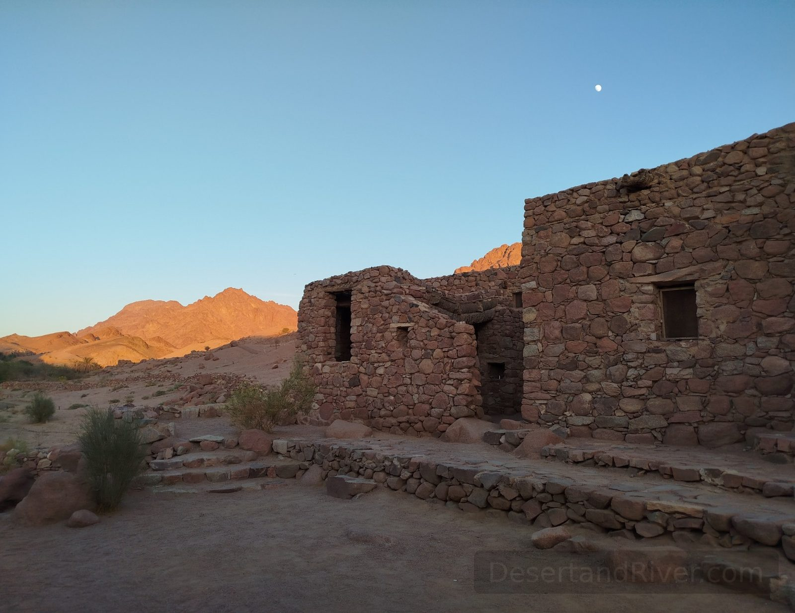
Al Karm Ecolodge
Al Karm Ecolodge is a small, sustainably built desert lodge in South Sinai that integrates local materials and traditional construction methods within a mountainous Bedouin landscape.
Constructed using biodegradable, locally sourced materials and regional building techniques, the lodge reflects long-standing desert practices adapted to contemporary ecological concerns. Its earthen walls and open courtyards moderate heat and frame expansive mountain horizons, where silence and shifting light create a heightened awareness of scale, time, and elemental simplicity.
Located in South Sinai, approximately 1–2 hours by road from Dahab, depending on desert route conditions.
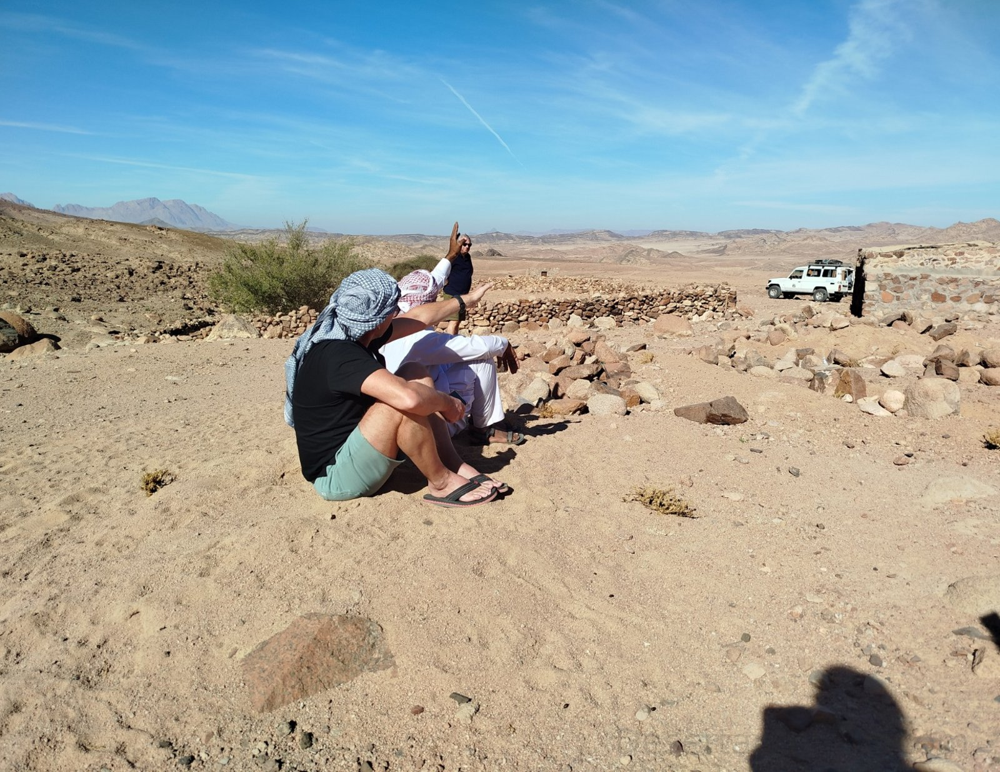
Sheikh Awad
Sheikh Awad is an ancient desert site in South Sinai, Egypt, known for its Stone Age remains and its location within the high mountain landscape between interior wadis and coastal plains.
Archaeological traces in the area include stone structures and lithic remains attributed to early human settlement, indicating habitation that extends back to the Stone Age. The scattered formations of worked stone, set against the stark granite terrain, evoke a quiet continuity of human presence, where the scale of geological time dwarfs individual lives yet preserves their imprint.
Located in South Sinai’s mountainous interior; accessible by 4x4 vehicle via desert tracks.
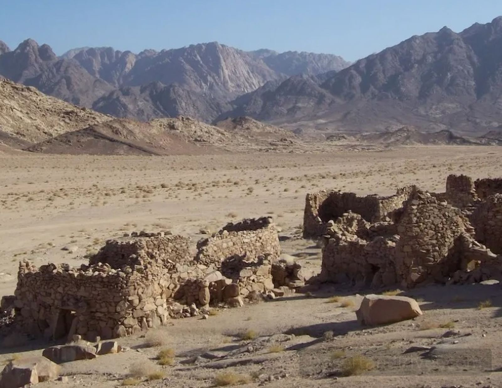
The Nabataean Village
The Nabataean Village near Saint Catherine, South Sinai, is an archaeological desert settlement preserving the stone remains of a trading community linked to the Nabataeans.
Located in the mountainous interior of South Sinai, often accessed via the El Karm area, the site consists of low, weathered stone structures integrated into the arid terrain. The Nabataeans, known for their regional trade networks centred on Petra, maintained routes across Sinai, and this settlement reflects their adaptation to a harsh desert environment. Walking among its remains, one senses the scale of time more than the scale of architecture.
Accessible by 4x4 vehicle
Wadi Slaf
Wadi Slaf is a historically significant desert valley in Egypt’s South Sinai Governorate, forming a major corridor through mountainous terrain toward the region of Saint Catherine.
Situated among high Precambrian formations of migmatites, gneisses, and amphibolites, the wadi has long functioned as a route linking Wadi Feiran and Wadi El Sheikh, with a vehicle track established in the 1920s. Archaeological remains, including prehistoric nawamis and traces of early copper mining in nearby areas such as Wadi Nasb, attest to sustained human presence; the scale of the valley and its mineral-darkened rock faces evoke a quiet awareness of geological and historical time.
Accessible by 4x4 vehicle
Wadi Isla
Wadi Isla is a mountainous desert valley in Egypt’s South Sinai Governorate, near El Tor and Saint Catherine, distinguished by its granite formations and arid, rugged terrain.
Situated between El Tor and Saint Catherine, Wadi Isla forms part of the granite mountain system that defines the interior of South Sinai. Its narrow passages and weathered rock faces reveal geological processes shaped over millennia, while the quiet scale of the landscape invites an awareness of time measured not in hours, but in stone.
Typical walking routes through the wadi range from 2–4 hours, depending on pace and entry point.
Wadi Hebran
Wadi Hebran is a broad desert valley in South Sinai, Egypt, noted for its traditional Bedouin routes and distinctive prehistoric stone structures called nawamis along its banks.
Historically, Wadi Hebran served as a transit and grazing corridor linking mountain settlements with the Red Sea coast. Two nawamis, positioned on the wadi’s banks, are illuminated by the rays of the setting sun—a subtle alignment that may have symbolized life’s end—inviting reflection on the interplay between human ritual, time, and the vast desert landscape.
Accessible by 4x4 vehicle; traversing the central stretch typically takes 2–3 hours depending on route and conditions.
Wadi Mukatab
Wadi Mukatab, located in South Sinai, Egypt, is an arid valley notable for its extensive array of ancient inscriptions carved into rock faces.
The site preserves a remarkable record of Nabatean and pre-Nabatean petroglyphs, including geometric motifs and early scripts, reflecting the region’s historical trade and cultural networks. Walking among the weathered stones, one senses the slow passage of time and the enduring quiet of this desert landscape.
Accessible via a moderate 1–2 hour walk
Wadi el Seha
Wadi el Seha is a secluded desert valley in South Sinai, Egypt, characterized by rugged rock formations, intermittent watercourses, and traces of ancient human activity.
This wadi extends through the arid landscape, offering a glimpse into Sinai’s geological history and its sparse, resilient vegetation. Walking its floor, one senses the stillness and scale of time, where silence is punctuated only by the whisper of wind over stones.
Accessible via 4×4 vehicle; moderate walking required
Wadi el Maghara
Wadi el Maghara is a dry valley in South Sinai, Egypt, notable for its prehistoric caves, ancient inscriptions, and some of the oldest known Egyptian turquoise mines dating to the 7th king of the 1st dynasty.
The wadi contains inscriptions over 4,700 years old, depicting figures of equal height holding a child’s hand—a rare representation of equality in ancient Egyptian art. Alongside burial remnants and petroglyphs, its quiet desert expanses convey a profound sense of continuity and human connection across millennia.
Accessible via 4x4 vehicle
Wadi Baba
Wadi Baba is a broad, arid drainage basin in southwestern Sinai, Egypt, channeling water into the Gulf of Suez and encompassing rugged granite terrain with layered historical significance.
The wadi contains traces of human activity spanning Pharaonic, Nabatean, Christian, and Islamic periods, including scattered ruins and inscriptions. Amidst its stark landscape, the interplay of light on granite ridges conveys a timeless stillness, offering a subtle sense of connection to the region’s enduring history.
Accessible by 4x4; flash floods are common during rare rains.
Wadi Gharandal
Wadi Gharandal is a broad desert valley in western South Sinai, Egypt, known for its seasonal freshwater springs and clusters of palms within an otherwise arid landscape.
Situated along the coastal plain between the Gulf of Suez and the Sinai interior, the wadi forms part of an ancient route system linking Egypt to the Levant. Unlike many dry valleys in the region, it periodically supports flowing water and light vegetation, creating a striking contrast between stone, sand, and green growth — a quiet reminder of resilience within apparent barrenness.
Accessible by 4x4 vehicle
Hammam Fir’aun
Hammam Fir’aun, located in Egypt’s Sinai Peninsula, is a natural hot spring historically utilized for bathing and therapeutic purposes amid rugged desert terrain.
This site features warm, mineral-rich waters emerging from the rocky desert floor, providing a quiet, contemplative environment that contrasts sharply with the surrounding arid landscape. Its remote location reflects centuries of local use, where travelers and Bedouin communities alike have sought the spring’s restorative qualities, inviting a subtle awareness of time and natural rhythm.
Accessible via 4x4 vehicle
Ayoun Musa
Ain Musa, or Moses Springs, is a group of freshwater springs in South Sinai near the Gulf of Suez, historically associated with the biblical and Quranic account of Moses and later used as a military position during the Israeli occupation of the peninsula.
The springs lie within a sparsely vegetated desert plain, their modest pools and palm groves offering a subdued sense of contrast against the surrounding arid landscape. In the mid‑20th century, the area’s strategic location led to its use by Israeli forces as a fortified stronghold during the occupation of Sinai (1967–1982), remnants of which — such as earthworks and defensive positions — are still visible alongside memorials to subsequent Egyptian military actions.
Located about 15–20 miles south of the Ahmed Hamdi Tunnel, accessible by road.

Ain Musa
Ain Musa is a thermal spring located in El Tor, Sinai, housed within a constructed pool that allows visitors to immerse in its naturally heated waters.
The spring has been adapted into an indoor pool, blending natural geothermal warmth with a contained, reflective space. Its gentle steam and quiet enclosure offer a momentary retreat from the harsh desert surroundings, inviting contemplation and a subtle awareness of time’s slow passage. The spring’s heat contrasts with the arid landscape outside, creating an intimate sensory experience.
Indoor hot spring pool, accessible year-round in El Tor.
Wadi Nasb
1. One‑Sentence Overview: Wadi Nasb is a dry valley (wadi) in South Sinai, Egypt, known for extensive archaeological remains of ancient copper smelting and related industrial activity within the Sinai Peninsula’s rugged desert landscape.
Situated at approximately 355 m above sea level in the southwestern Sinai, Wadi Nasb was a focal point of mineral processing from the Old Kingdom through later periods, where copper ore was transformed into metal within a complex of furnaces, administrative spaces, and watchpoints. The scale of slag and structural remains conveys a sense of sustained production and the enduring imprint of human endeavour on this stark, sun‑baked terrain.
Elevation: ~355 m above sea level with archaeological deposits reflecting prolonged ancient and nabatean metallurgical activity.
Bir Nasb
One‑Sentence Overview: Bir Nasb is a named water well (bir) in the rugged interior of Egypt’s South Sinai Governorate, positioned within the arid expanse of the peninsula’s desert uplands.
Located at an elevation of about 917 metres above sea level, Bir Nasb marks a traditional source of groundwater in an otherwise dry landscape where seasonal winds and long daylight create a palpable sense of open space. The well’s presence reflects millennia of human adaptation to Sinai’s climate, serving historically as a landmark for nomadic routes and occasional mining expeditions in nearby Wadi al‑Nasb.
Elevation ~ 917 m above sea level; located in South Sinai, Egypt.
Rod el-Eir
Rod el-Eir is a desert wadi in the Sinai Peninsula, Egypt, located on the route to the Serabit el-Khadim temple, featuring ancient inscriptions and traces of Pharaonic wildlife.
The wadi contains rock carvings of boats, giraffes, and other fauna dating to the Pharaonic era, including what is considered the region’s oldest “hashtag”-like symbol. Walking among these petroglyphs evokes a quiet connection to the people who traversed this landscape thousands of years ago, and to the broader, now-vanished ecosystem they inhabited.
Accessible via 4x4; en route to Serabit el-Khadim temple
Serabeit el Kadim
Serabeit el Kadim in southwestern Sinai, Egypt, is an ancient archaeological site of extensive turquoise and copper mining with the remains of a Temple of Hathor and early alphabetic inscriptions.
This plateau‑top site was worked by ancient Egyptians and Near Eastern labourers from at least the Middle Kingdom, with a temple dedicated to Hathor, the desert protector and “Mistress of Turquoise.” The scattered stelae and rock inscriptions in early Proto‑Sinaitic script, carved into the sun‑bleached stone, evoke a long human engagement with this high, wind‑swept landscape where language and belief were both materially inscribed.
Located roughly 43 km east of Abu Zenima on a plateau about 850 m above sea level.
Magharet el Teleha
Magharet el Teleha is a limestone cave in southern Sinai, Egypt, notable for prehistoric inscriptions in both Proto-Sinaitic script and Egyptian hieroglyphs, near ancient turquoise mining sites.
The cave contains the oldest known examples of the Proto-Sinaitic alphabet alongside hieroglyphic inscriptions, a combination first documented by archaeologist Flinders Petrie. Its interior evokes a hushed sense of time suspended, where early writing and nearby turquoise mines reflect both the creativity and labor of ancient peoples in the vast Sinai landscape.
Umm Yasser
A pioneering Bedouin woman from the Hamada tribe, Umm Yasser is the first female head guide on the Sinai Trail, leading treks that explore South Sinai’s landscapes and culture.
Since 2019, Umm Yasser has navigated the traditionally male-dominated Sinai Trail, guiding mostly women and sharing the local flora, history, and Bedouin way of life. Her presence evokes a quiet sense of resilience and continuity, as she bridges centuries-old traditions with modern possibilities for women in the region.
Started guiding in 2019; first female Bedouin head guide on Sinai Trail.
Wadi el Sahu
A remote wadi in southern Sinai, Wadi el Sahu encompasses an isolated Bedouin village and ancient rock inscriptions spanning Pharaonic, Nabatean, and prehistoric periods.
The village is primarily inhabited by the Hamada tribe, offering visitors insight into traditional Bedouin life and hospitality, notably exemplified by Umm Yasser, Sinai’s first female guide. Amid the quiet desert landscape, the engraved stones and worn pathways evoke a profound sense of history and enduring human presence.
Contains visible rock inscriptions from multiple historical periods and still-inhabited traditional Bedouin homes.
Wadi el Lihyan
Wadi el Lihyan is a desert valley in southern Sinai, Egypt, notable for its ancient rock inscriptions, mineral deposits, and historical Bedouin pathways.
The valley contains petroglyphs and traces of early mining activity, reflecting human presence across millennia. Its stark, open terrain conveys a profound sense of stillness, where the scale of the desert can make time feel suspended.
Elevation ranges around 400–600 meters above sea level; accessible via 4x4 tracks.

Wadi Abu Soura
Wadi Abu Soura is a narrow desert valley in Sinai where perennial water seeps along its cliffs, forming natural stalactites and crystalline salt deposits.
This wadi’s persistent moisture has carved a delicate, otherworldly landscape of dripping formations and mineral crusts, contrasting sharply with the surrounding arid terrain. Walking here, one senses the slow passage of time and the quiet persistence of water in shaping stone.
Contains year-round dripping water that creates stalactites and salt crystals along the valley walls.
Jabal Um Bugma
A broad, elevated granite‑tableland and former mining settlement in South Sinai, positioned on rugged desert terrain in the broader Sinai Peninsula of Egypt.
Historically, Um Bogma refers to both the plateau and the abandoned early‑20th‑century manganese‑mining works established during the British mandate, later operated by Egyptian authorities before mid‑20th‑century closures. The location lies amid deep granite gorges and arid valleys that have been traversed by local Bedouin for centuries; walkers on long desert trails often note a stark stillness and the muted geometry of light and stone at dawn.
Accessible by 4x4 vehicle
Wadi Barag
Wadi Barag is a central Sinai valley known for its striking rock formations and diverse stone types, forming a scenic passage along the desert road.
Traveling through Wadi Barag by vehicle, the layered colors and textures of its rocks unfold gradually, revealing both geological variety and the quiet, enduring presence of the desert landscape. The wadi’s stones, ranging from red sandstone to pale limestone, create a subtle rhythm that marks the passage of time.
Accessible by 4x4 vehicle

Qalʿat el Gindi (The soldiers fort)
One‑Sentence Overview (27 words) Qalʿat el Gindi is a 12th‑century fortification on a strategic eastern ridge of the Sinai Peninsula in Egypt, built for defence and as a waystation along historic trade and pilgrimage routes.
Constructed under the direction of Saladin in the late 1100s, the stone fortress crowns a natural hill overlooking the surrounding desert and wadis, with remnants of towers, walls and enclosed spaces attesting to its dual role as military stronghold and shelter for travellers. Its scale and quiet stone surfaces evoke the patient labour of its builders and the long passage of caravan and army alike through this austere landscape.
Elevation: approximately 645 m above sea level, commanding views over the central Sinai plateau.
Sheikh Abu‑Taleb
One‑Sentence Overview: A named geographic waypoint and local Bedouin site in the central Sinai Peninsula of Egypt, marking the burial place of a Bedouin sheikh on a modest hill amidst desert wadis near traditional caravan routes.
Situated within the sweeping, arid landscape of central Sinai, the site lies along Wadi Islaf and is known locally for the tomb of an esteemed Bedouin figure, Sheikh Abu‑Taleb, which occupies a small rise in the wadi floor. Travellers and desert dwellers describe a palpable stillness at the spot where sand, stone, and vast sky converge, and where the quiet presence of the burial place evokes the slow passage of time in this sparsely settled region.
Located in central Sinai’s desert terrain near Wadi Islaf — a waypoint on traditional routes through the peninsula.
Wadi Sahab
One‑Sentence Overview: Wadi Sahab is a dry valley (wadi) in the South Sinai region of Egypt, defined by an intermittent streambed incised into arid mountains east of the central Sinai highlands and characteristic of the peninsula’s desert drainage system.
Geographically, Wadi Sahab lies amid the rugged terrain of South Sinai and forms part of the broader network of seasonal watercourses that punctuate the limestone and granite uplands of the peninsula. The valley supports a surprising abundance of vegetation, including clusters of acacia trees, which create a quiet contrast to the surrounding arid landscape and invite a reflective sense of stillness and time.
Elevation approximately 879 m; valley contains dense patches of vegetation and acacia trees.
Wadi Barah
A secluded valley in the southern Sinai Peninsula, Wadi Barah contains notable rock formations, ancient inscriptions, and traces of historic human activity.
Within Wadi Barah lies Hagar el-Logha, the “Talking Stone,” whose natural echo amplifies voices across the valley. The site preserves Nabatean, Coptic, Greek, and Arabic inscriptions, offering a layered record of Sinai’s long and varied human presence, where the stillness of the desert invites quiet reflection.
Hagar el-Logha is accessible via a short walk from the main valley path.
Wadi Khamila
A narrow valley in South Sinai notable for ancient rock art and inscriptions, reflecting early Egyptian and Nabatean presence and historical mining activity in the region.
Wadi Khamila contains a 5,000-year-old rock panel showing an Egyptian figure dominating a local, linked to copper extraction and the god Min as “ruler of copper ore.” Nabatean inscriptions later mark the site, offering a layered glimpse of Sinai’s long human history. The stillness of the valley evokes a sense of time stretching across millennia.
Accessible by 4x4 vehicle and is a short walk

Wadi Umm Garaf
A narrow valley in southern Sinai, Wadi Garaf contains large boulders from surrounding mountains, alongside Nabatean inscriptions and ancient cave paintings reflecting early human presence.
Wadi Garaf preserves traces of historical occupation through inscriptions and rock art, revealing the continuity of human engagement with the rugged landscape. The scale of fallen rocks and silent stretches of the valley evoke a quiet sense of time pressing slowly across the desert.
Accessible by 4x4 vehicle with short walk
Umm Arak Plateau
A one‑sentence overview (25–30 words): Umm Arak Plateau is a sandstone upland in South Sinai, Egypt, marked by a recently documented rock shelter bearing layered human art and inscriptions that record millennia of occupation.
Located about 5 km northeast of the ancient mining and temple complex at Serabit el‑Khadim, the plateau’s natural sandstone shelter extends over 100 m and contains drawings and engravings spanning from the late prehistoric period through historic eras. Its surfaces convey varying techniques and iconography—animals, hunting scenes, riders, and inscriptions—that evoke the enduring presence of people inhabiting and traversing this harsh landscape.
Shelter length ~100 m with rock art strata from ~10,000 BCE to early Islamic periods.
Wadi Kharig
One‑Sentence Overview: Wadi Kharig is an inland valley in southern Sinai, Egypt, notable for its ancient copper mining and metallurgical remains, and for inscriptions including King Sahure’s name from the Fifth Dynasty (c. 2428 BCE).
This valley lies roughly 30 minutes’ travel from the Serabit el‑Khadim region and forms part of a broader matrix of prehistoric and Bronze Age mining landscapes in South Sinai, where crucibles and smelting debris attest to early metallurgical activity. Among the rock inscriptions is a cartouche bearing King Sahure’s name, connecting the harsh desert landscape to Egypt’s Fifth Dynasty; the stillness of the valley conveys the enduring human effort embedded in the stones.
Located ~30 min from Serabit el‑Khadim, within the central Sinai mining district.
Jabal Hasbar
Jabal Hasbar is a small sandstone hill near Serabeit el Khadim, notable for its early inscriptions, including hieroglyphs with a cartouche of King Menkau-Ra (4th Dynasty, c. 2510 BCE).
The inscriptions at Jabal Hasbar combine symbolic marks with hieroglyphic text, linking the site to pharaonic expeditions in Sinai. Among the ochre cliffs, the carvings evoke a sense of deep history and the quiet persistence of human presence across millennia.
Discovered in 2012; accessible via 4x4 vehicle and a short climb.
Wadi Omeria
Wadi Omeria is a desert valley in southern Sinai notable for its recently discovered ancient inscriptions depicting Horus of Narmer, the first king of Egypt’s First Dynasty.
The inscriptions, uncovered by Tallet and Laisney in 2012, reveal early pharaonic iconography rarely preserved in Sinai’s arid landscape. The valley’s quiet expanse and shifting sands convey a subtle sense of deep time, where human presence feels both transient and monumental against the enduring desert.
Located in southern Sinai; accessible via off-road track with 4x4 vehicle
Wadi Humur
A remote valley in southern Sinai, Wadi Humur preserves rock inscriptions along the Nabatean trade route, illustrating historical scenes from war to Bedouin life.
The site features a prominent rock engraved with detailed depictions of a battle and an ancient Bedouin wedding, offering rare insight into the region’s social and martial history. Standing beside these carvings, one senses the stillness of the desert and the weight of centuries preserved in stone.
Located on the Nabatean trade route, accessible by 4x4 vehicle

Wadi Nufous
A remote valley in the southern Sinai Peninsula, Wadi Nufous is known for its Nabatean inscriptions and rock drawings along ancient travel routes.
The valley forms part of the path leading to Thilmat Ogiy, with stones etched by Nabatean travelers centuries ago. The quiet expanse evokes a sense of stillness, where time feels suspended between the etched markings and the surrounding desert landscape.
Accessible by 4x4 vehicle along the route to Thilmat Ogiy.
Wadi el Kit
1. One‑Sentence Overview (25–30 words) Wadi el Kit (also known locally as Wadi Kid) is a natural desert valley in the southern Sinai Peninsula of Egypt, cutting through rugged metamorphic terrain amid the arid landscape near Dahab and surrounding highlands.
This wadi is part of the broader network of seasonal dry riverbeds that shape Sinai’s topography, composed of steep rock walls, alluvial plains, and occasional springs that have supported Bedouin habitation and small patches of desert vegetation. Geologically, it traverses ancient Precambrian rocks of the Arabian–Nubian Shield, and its quieter stretches convey a palpable stillness where light and shadow shift across granite and gneiss, evoking the slow passage of time in this sparsely populated region.
Accessible by 4x4 vehicle and short walk
Forest of Pillars
One‑Sentence Overview (max 30 words) The Forest of Pillars is a remote geological formation of naturally occurring, upright tubular rock columns on the sandy plain beneath the Tih Plateau in South Sinai, Egypt.
Situated near Gebel Fuga and accessed via off‑road tracks inland from Serabit el‑Khadim, the site comprises clustered, iron‑oxide‑rich columns whose shapes reflect a rare process of mineral precipitation in desert sandstone. These formations stand in stark contrast to the broad, wind‑sculpted plains around them, offering a quiet sense of geological time where stillness and scale are felt in the low‑light shadows cast across the desert floor.
Accessible only by 4×4
Jabal Mokaber
A prominent sandstone hill in southern Sinai, Jabal Mokaber features ancient Nabatean and hieroglyphic inscriptions near the archaeological site of Serabeit el Kadim.
Jabal Mokaber overlooks the surrounding desert plateau, offering a quiet sense of historical depth as the inscriptions hint at trade and travel routes used millennia ago. The stillness of the hill contrasts with the stories etched into its stone, inviting reflection on human presence across vast spans of time.
Elevation approximately 650 meters; accessible by a moderate hike from Serabeit el Kadim.

Oyan Sudr
Oyan Sudr is a desert site in the Sinai Peninsula, Egypt, featuring a single mineral-rich hot spring amid an arid, rocky landscape.
The lone hot spring has long provided warmth and refreshment for local Bedouin communities, standing in quiet contrast to the surrounding barren desert. Its steaming waters offer a rare moment of calm, evoking a subtle sense of time and stillness in the expansive landscape.
Accessible by car; contains one hot spring.
Wadi Zalaga
A broad desert valley in South Sinai, Wadi Zalaga is renowned for hosting traditional Bedouin camel races that sustain tribal cultural heritage.
Wadi Zalaga stretches across a quiet, open landscape where the Al-Tarabin and Al-Mazayna tribes converge annually for endurance races spanning 28–30 km. The valley’s arid expanse conveys both the harshness and the calm of the Sinai desert, offering a sense of timeless continuity in the rhythms of local life.
Access by 4x4 vehicle
Wadi Kharaba
Wadi Kharaba is a dry valley (wadi) in the Sinai Peninsula of Egypt, part of the region’s intricate network of arid riverbeds that intermittently channel water during rare rains and shape the rugged desert landscape.
Wadi Kharaba exemplifies the steep, stony channels typical of this arid peninsula, carved over millennia by episodic flash floods and wind erosion. Its contours and sediments bear quiet witness to deep geological time and climatic contrasts, evoking a sense of ancient forces at work in silence.
Accessible only by 4×4 vehicles; terrain is very rugged and challenging.
How we choose what fits together
We don’t “collect” places. We design routes that respect distance, heat, terrain, permissions, and guest readiness. Often the most memorable journeys include fewer stops and more time.
Next step
Pick 5–10 places that genuinely interest you. Then book a call and we’ll propose a responsible route.
Book a 30-minute call Read how bespoke works